Dados: geometria, não-linearidade e pré-processamento¶
Três exercícios sobre a pergunta que antecede a escolha de qualquer arquitetura: que forma têm os dados, e que tipo de fronteira essa forma exige? O primeiro mede espalhamento em 2D, o segundo contrasta separabilidade linear e radial em 5D, e o terceiro leva a mesma lógica para um dataset real que precisa entrar numa rede com ativação tanh.
Todo o código está em code/ e roda com semente fixa (SEED = 42); as figuras em figures/ são exatamente as que os scripts produzem.
Como reproduzir
pip install -r requirements.txt
cd docs/exercises/data/code
python3 ex1_nuvens.py && python3 ex1b_espalhamento.py && python3 ex1c_analise.py
python3 ex2_dataset1.py && python3 ex2_dataset2.py && python3 ex2c_pca.py && python3 ex2d_analise.py
python3 ex3a_conhecer.py && python3 ex3bcd_preprocessa.py
O train.csv do Exercício 3 vem da competição Spaceship Titanic e está versionado em data/.
Exercício 1¶
Abordagem. Gerei quatro nuvens gaussianas 2D com as médias e desvios dados, medi a separação entre elas com uma razão adimensional, e repeti a geração inflando todos os desvios por um fator de escala s. A pergunta guia é quando a separabilidade linear se perde — e montei a medição para que essa perda tivesse um marcador numérico, não apenas visual.
A — Gere as nuvens¶
Cada classe recebeu 100 amostras de rng.normal(loc=μ, scale=σ, size=(100,2)) — covariância diagonal, cada eixo com seu próprio desvio e sem correlação entre x₁ e x₂.
| Classe | μ teórico | μ amostral | σ teórico | σ amostral |
|---|---|---|---|---|
| 0 | (2, 3) | (1.99, 2.89) | (0.8, 2.5) | (0.73, 2.14) |
| 1 | (5, 6) | (5.07, 5.97) | (1.2, 1.9) | (1.28, 1.86) |
| 2 | (8, 1) | (7.90, 0.98) | (0.9, 0.9) | (0.91, 0.92) |
| 3 | (15, 4) | (14.99, 3.88) | (0.5, 2.0) | (0.52, 2.02) |
A maior discrepância é o σ de x₂ da classe 0 (2.14 contra 2.5) — flutuação amostral esperada com n = 100.
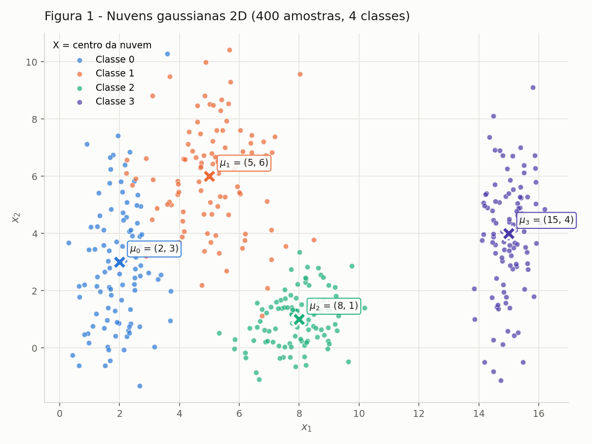
Figura 1 — as 400 amostras, uma cor por classe, com a média de cada nuvem marcada com × e rotulada. As classes 0 e 1 se sobrepõem na faixa x₁ ≈ 3–4; a classe 3 está isolada em x₁ ≈ 15.
B — Mais ou menos espalhado¶
As mesmas quatro classes, geradas quatro vezes com todos os desvios multiplicados por s ∈ {0.5, 1, 2, 4}. Um detalhe de implementação torna a comparação limpa: sorteio o mesmo ruído normal padrão z com a semente fixa e faço μ + z·(σ·s), de modo que as quatro versões são literalmente a mesma nuvem inflada — a diferença entre os painéis é só o s, sem ruído de sorteio.
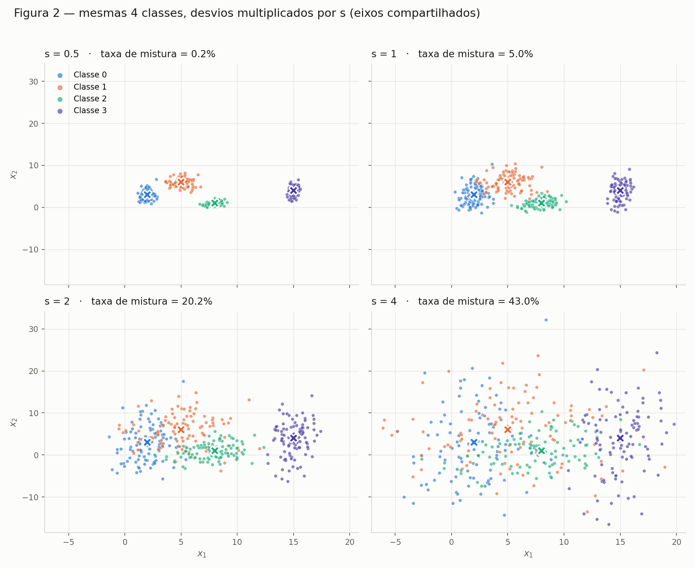
Figura 2 — os quatro datasets com eixos compartilhados, para que a comparação seja honesta.
Razão de separação (s = 1)¶
rᵢⱼ = ‖μᵢ − μⱼ‖ / (σ̄ᵢ + σ̄ⱼ), com σ̄ₖ = (σₖ,ₓ + σₖ,ᵧ)/2:
| Par (i, j) | ‖μᵢ − μⱼ‖ | σ̄ᵢ + σ̄ⱼ | rᵢⱼ |
|---|---|---|---|
| (0, 1) | 4.243 | 3.20 | 1.326 ← menor |
| (1, 2) | 5.831 | 2.45 | 2.380 |
| (0, 2) | 6.325 | 2.55 | 2.480 |
| (2, 3) | 7.616 | 2.15 | 3.542 |
| (1, 3) | 10.198 | 2.80 | 3.642 |
| (0, 3) | 13.038 | 2.90 | 4.496 |
O menor é o par (0, 1): são os dois centros mais próximos (4.24) e, ao mesmo tempo, as duas nuvens mais gordas (σ̄ = 1.65 e 1.55).
Como as médias não mudam, o numerador é constante e o denominador escala com s, então rᵢⱼ(s) = rᵢⱼ(1)/s. Em s = 2: r₀₁ = 1.326 / 2 = 0.663 — sem gerar nada.
Taxa de mistura¶
Fração de pontos cujo centro de classe mais próximo não é o da própria classe — medida puramente geométrica, sem treinar nada: a distância de cada ponto às quatro médias sai de um único broadcasting (N,1,2) − (1,4,2).
| s | Taxa de mistura | menor rᵢⱼ | Por classe |
|---|---|---|---|
| 0.5 | 0.25% | 2.652 | C0 1%, demais 0% |
| 1.0 | 5.00% | 1.326 | C0 8%, C1 12%, C2/C3 0% |
| 2.0 | 20.25% | 0.663 | C0 31%, C1 38%, C2 7%, C3 5% |
| 4.0 | 43.00% | 0.331 | C0 51%, C1 56%, C2 43%, C3 22% |
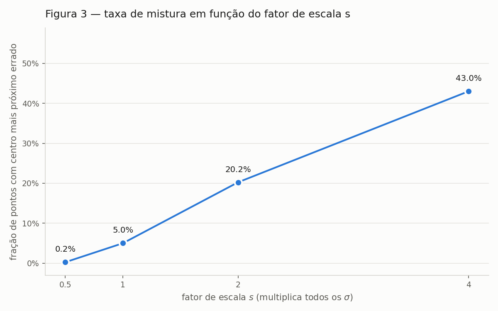
Figura 3 — taxa de mistura × fator de escala. O salto entre s = 1 e s = 2 é onde o problema muda de natureza.
A partir de qual fator de escala as nuvens deixam de poder ser separadas por retas?
A partir de s = 2. Em s = 0.5 e s = 1 ainda dá: os 5% de mistura em s = 1 são pontos de borda entre as classes 0 e 1, e as outras três fronteiras continuam limpas — um conjunto de retas erra pouco. Em s = 2 as nuvens 0 e 1 se interpenetram (31% e 38% de mistura) e a classe 2 já invade as duas; não existe reta que separe 0 de 1, porque não há mais uma região de baixa densidade entre elas. Em s = 4 é caos: 43% de mistura, com o acaso puro em 75%.
E o menor rᵢⱼ nesse ponto? Ele cruza 1. r₀₁ vai de 1.326 para 0.663: a distância entre os centros passa a ser menor que a soma dos espalhamentos, ou seja, cada nuvem alcança fisicamente o centro da outra. r ≈ 1 é o limiar geométrico entre "separável por reta" e "sobreposto" — exatamente onde a mistura sai do regime de bordas (5%) e vira estrutural (20%).
C — Análise¶
A sobreposição no dataset original não é uniforme, é concentrada em um só lugar. O par (0, 1) ocupa de fato a mesma faixa x₁ ≈ 3–4; as classes 1 e 2 só se tocam pelas caudas (r = 2.38); 0 e 2 são quase disjuntas (r = 2.48); e a classe 3 está isolada, com um vazio de ~4 unidades em x₁ separando-a da nuvem 2.
Uma única fronteira linear separaria todas as classes? E um conjunto de fronteiras lineares?
Uma só, não — por dois motivos independentes. Primeiro, uma reta divide o plano em duas regiões e são quatro classes: é impossível por geometria, quaisquer que fossem os dados. Segundo, mesmo o subproblema binário mais fácil aqui (0 contra 1) não tem solução exata por reta, porque as duas nuvens se interpenetram.
Um conjunto de retas, quase. Três retas bem posicionadas — uma vertical em x₁ ≈ 12 isolando a classe 3, uma separando a 2 das demais, uma na diagonal entre 0 e 1 — chegam a ~95% de acerto. É exatamente o que faz a partição por centro mais próximo: 5.0% de erro. O que sobra é a região 0∩1, que nenhum arranjo de retas resolve. O resíduo não é falta de capacidade do modelo, é sobreposição das distribuições.
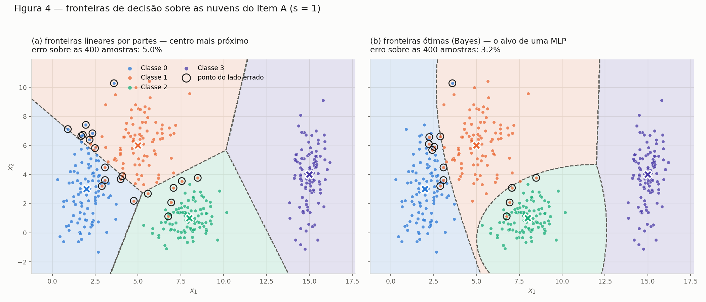
Figura A1 — o esboço das fronteiras sobre os dados do item A. À esquerda, a partição de Voronoi das quatro médias: retas, o que uma camada softmax traça (5.0% de erro). À direita, a fronteira ótima de Bayes: como as covariâncias diferem entre classes, ela é curva (3.2% de erro). Os círculos pretos marcam os pontos do lado errado — quase todos na faixa entre as classes 0 e 1.
O ganho de 5.0% para 3.2% é precisamente o que a não-linearidade compra neste dataset: a fronteira ótima encurva para envolver a nuvem 2, que é compacta, e estreita a região da classe 0 em x₂ alto — coisas que nenhuma reta faz.
Para quantificar o que é irredutível, calculei o erro de Bayes por Monte Carlo (200 000 amostras da distribuição verdadeira, classificadas pelo argmax da densidade real). É o piso: nenhuma arquitetura, nenhum treino e nenhum volume de dados fica abaixo dele.
| s | Erro de Bayes | Taxa de mistura | menor rᵢⱼ |
|---|---|---|---|
| 0.5 | 0.02% | 0.25% | 2.652 |
| 1.0 | 3.00% | 5.00% | 1.326 |
| 2.0 | 15.75% | 20.25% | 0.663 |
| 4.0 | 33.38% | 43.00% | 0.331 |
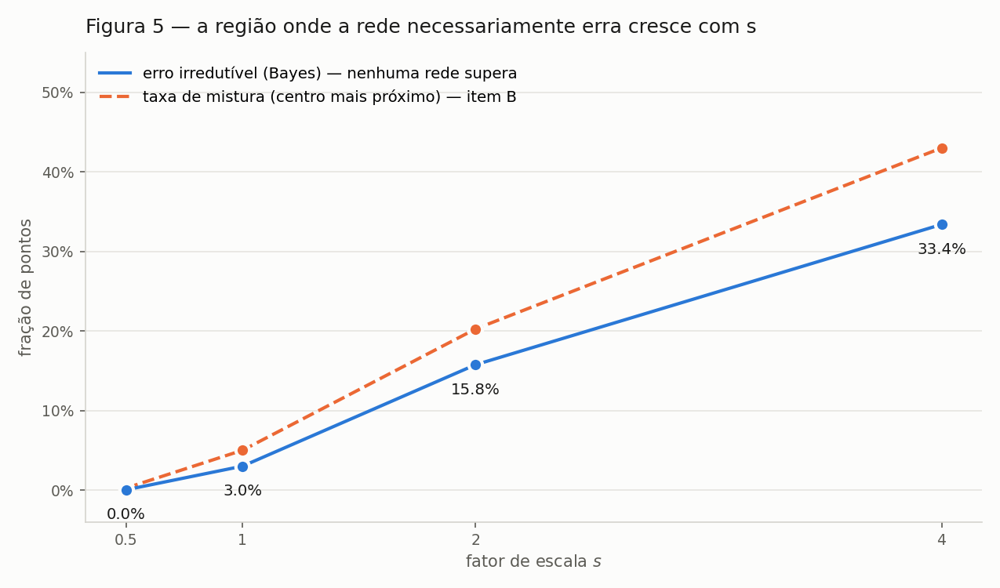
Figura A2 — a curva azul é o piso irredutível; a laranja é a mistura geométrica do item B. A distância entre as duas é a única coisa que a escolha de arquitetura controla.
Quanto mais espalhadas as nuvens, o que acontece com a região onde a rede necessariamente erra?
Ela cresce de duas maneiras ao mesmo tempo. Em área: deixa de ser uma fita fina entre duas nuvens e vira uma região larga — de praticamente medida nula em s = 0.5 (0.02% de erro) a um terço do plano ocupado em s = 4 (33.38%). Em número de pares envolvidos: em s = 1 só o par (0, 1) contribui, com as classes 2 e 3 em 0% de erro; em s = 4 até a classe 3, a mais isolada, erra 22% — a sobreposição deixou de ser local e virou global.
O elo com o item B é direto: rᵢⱼ mede a largura dessa região. Enquanto r > 1 existe um vale de baixa densidade onde pôr a fronteira; quando r₀₁ cruza 1, o vale desaparece e qualquer fronteira — reta, curva ou uma rede de dez camadas — corta densidade alta dos dois lados. Aumentar capacidade em s = 4 não é resolver o problema, é decorar ruído.
Código do Exercício 1¶
code/ex1_nuvens.py — geração das nuvens e Figura 1
"""
Exercicio 1 - Nuvens de Pontos: Geometria e Espalhamento em 2D
Parte A: geracao das nuvens gaussianas + Figura 1 (scatter 2D com os centros).
"""
import numpy as np
import pandas as pd
import matplotlib.pyplot as plt
from _saida import figura, dado
SEED = 42
N_POR_CLASSE = 100
# (media, desvio padrao) por classe, em (x1, x2)
PARAMS = {
0: {"mu": np.array([2.0, 3.0]), "sigma": np.array([0.8, 2.5])},
1: {"mu": np.array([5.0, 6.0]), "sigma": np.array([1.2, 1.9])},
2: {"mu": np.array([8.0, 1.0]), "sigma": np.array([0.9, 0.9])},
3: {"mu": np.array([15.0, 4.0]), "sigma": np.array([0.5, 2.0])},
}
# paleta categorica validada para scatter (todas as duplas, visao normal e CVD)
CORES = {0: "#2a78d6", 1: "#eb6834", 2: "#1baf7a", 3: "#4a3aa7"}
SURFACE = "#fcfcfb"
TINTA = "#1a1a19"
TINTA_2 = "#5c5b55"
def gerar_dados(seed=SEED, n=N_POR_CLASSE):
"""Gera n amostras gaussianas 2D por classe. Retorna X (400,2) e y (400,)."""
rng = np.random.default_rng(seed)
Xs, ys = [], []
for classe, p in PARAMS.items():
# covariancia diagonal: cada eixo sorteado com seu proprio desvio
pontos = rng.normal(loc=p["mu"], scale=p["sigma"], size=(n, 2))
Xs.append(pontos)
ys.append(np.full(n, classe))
return np.vstack(Xs), np.concatenate(ys)
def figura_1(X, y, caminho=None):
caminho = caminho or figura("fig01_nuvens.png")
fig, ax = plt.subplots(figsize=(8, 6), dpi=150)
fig.patch.set_facecolor(SURFACE)
ax.set_facecolor(SURFACE)
for classe in sorted(PARAMS):
pts = X[y == classe]
ax.scatter(pts[:, 0], pts[:, 1], s=26, c=CORES[classe], alpha=0.70,
linewidths=0.5, edgecolors=SURFACE, label=f"Classe {classe}",
zorder=2)
for classe, p in PARAMS.items():
mx, my = p["mu"]
# centro teorico (media usada na geracao)
ax.scatter(mx, my, marker="X", s=190, c=CORES[classe],
edgecolors=SURFACE, linewidths=2.0, zorder=4)
ax.annotate(f"$\\mu_{classe}$ = ({mx:g}, {my:g})", (mx, my),
textcoords="offset points", xytext=(10, 10),
fontsize=9, color=TINTA, zorder=5,
bbox=dict(boxstyle="round,pad=0.25", fc=SURFACE,
ec=CORES[classe], lw=1.0, alpha=0.9))
ax.set_title("Figura 1 - Nuvens gaussianas 2D (400 amostras, 4 classes)",
fontsize=12, color=TINTA, pad=12, loc="left")
ax.set_xlabel("$x_1$", color=TINTA_2)
ax.set_ylabel("$x_2$", color=TINTA_2)
ax.grid(True, color="#e6e5e0", linewidth=0.8, zorder=0)
ax.set_axisbelow(True)
for lado in ("top", "right"):
ax.spines[lado].set_visible(False)
for lado in ("left", "bottom"):
ax.spines[lado].set_color("#d5d4ce")
ax.tick_params(colors=TINTA_2, labelsize=9)
ax.legend(title="X = centro da nuvem", frameon=False, fontsize=9,
title_fontsize=9, loc="upper left")
fig.tight_layout()
fig.savefig(caminho, facecolor=SURFACE)
print(f"Figura salva em: {caminho}")
return fig
if __name__ == "__main__":
X, y = gerar_dados()
df = pd.DataFrame(X, columns=["x1", "x2"]).assign(classe=y)
df.to_csv(dado("dados_nuvens.csv"), index=False)
print(f"X: {X.shape} | y: {y.shape} | por classe: {np.bincount(y)}")
print("\nMedia e desvio AMOSTRAIS por classe (vs. os teoricos):")
for classe, p in PARAMS.items():
pts = X[y == classe]
m, s = pts.mean(axis=0), pts.std(axis=0, ddof=1)
print(f" Classe {classe}: mu_amostral=({m[0]:6.3f}, {m[1]:6.3f})"
f" teorico=({p['mu'][0]:g}, {p['mu'][1]:g})"
f" | sigma_amostral=({s[0]:5.3f}, {s[1]:5.3f})"
f" teorico=({p['sigma'][0]:g}, {p['sigma'][1]:g})")
figura_1(X, y)
code/ex1b_espalhamento.py — escalas, rᵢⱼ, taxa de mistura, Figuras 2 e 3
"""
Exercicio 1 - Parte B: Mais ou menos espalhado.
4 datasets (mesmas 4 classes, mesmas medias), com todos os desvios multiplicados
por s in {0.5, 1.0, 2.0, 4.0}.
Produz: Figura 2 (4 subplots, eixos compartilhados), tabela de razoes de
separacao r_ij (s=1), taxa de mistura por s e Figura 3 (mistura x s).
"""
import itertools
import numpy as np
import pandas as pd
import matplotlib.pyplot as plt
from _saida import figura, dado
from ex1_nuvens import PARAMS, CORES, SURFACE, TINTA, TINTA_2, N_POR_CLASSE, SEED
ESCALAS = [0.5, 1.0, 2.0, 4.0]
MU = np.array([PARAMS[k]["mu"] for k in sorted(PARAMS)]) # (4, 2)
SIGMA = np.array([PARAMS[k]["sigma"] for k in sorted(PARAMS)]) # (4, 2)
def gerar_escalado(s, seed=SEED, n=N_POR_CLASSE):
"""Mesmas medias, desvios multiplicados por s. Seed fixa por escala:
o mesmo sorteio normal padrao e reescalado, entao as 4 nuvens sao
literalmente a mesma nuvem 'inflada' - a comparacao isola o efeito de s."""
rng = np.random.default_rng(seed)
Xs, ys = [], []
for k in sorted(PARAMS):
z = rng.standard_normal((n, 2)) # ruido comum as escalas
Xs.append(MU[k] + z * (SIGMA[k] * s)) # mu + z * (sigma*s)
ys.append(np.full(n, k))
return np.vstack(Xs), np.concatenate(ys)
def razoes_separacao(sigma=SIGMA, mu=MU):
"""r_ij = ||mu_i - mu_j|| / (sigma_bar_i + sigma_bar_j), sigma_bar = media dos eixos."""
sigma_bar = sigma.mean(axis=1)
linhas = []
for i, j in itertools.combinations(range(len(mu)), 2):
d = float(np.linalg.norm(mu[i] - mu[j]))
linhas.append({
"par": f"({i}, {j})",
"||mu_i - mu_j||": d,
"sigma_bar_i": sigma_bar[i],
"sigma_bar_j": sigma_bar[j],
"r_ij": d / (sigma_bar[i] + sigma_bar[j]),
})
return pd.DataFrame(linhas)
def taxa_de_mistura(X, y, mu=MU):
"""Fracao de pontos cujo centro de classe mais proximo nao e o da propria classe.
Distancia de cada ponto as 4 medias por broadcasting: (N,1,2) - (1,4,2)."""
d = np.linalg.norm(X[:, None, :] - mu[None, :, :], axis=2) # (N, 4)
mais_proximo = d.argmin(axis=1)
return float((mais_proximo != y).mean()), mais_proximo
def figura_2(datasets, caminho=None):
caminho = caminho or figura("fig02_escalas.png")
todos = np.vstack([X for X, _ in datasets.values()])
pad = 0.04 * (todos.max(axis=0) - todos.min(axis=0))
xlim = (todos[:, 0].min() - pad[0], todos[:, 0].max() + pad[0])
ylim = (todos[:, 1].min() - pad[1], todos[:, 1].max() + pad[1])
fig, axes = plt.subplots(2, 2, figsize=(11, 9), dpi=150,
sharex=True, sharey=True)
fig.patch.set_facecolor(SURFACE)
for ax, (s, (X, y)) in zip(axes.ravel(), datasets.items()):
ax.set_facecolor(SURFACE)
for k in sorted(PARAMS):
pts = X[y == k]
ax.scatter(pts[:, 0], pts[:, 1], s=14, c=CORES[k], alpha=0.65,
linewidths=0.4, edgecolors=SURFACE,
label=f"Classe {k}" if s == ESCALAS[0] else None, zorder=2)
ax.scatter(MU[:, 0], MU[:, 1], marker="X", s=110,
c=[CORES[k] for k in sorted(PARAMS)],
edgecolors=SURFACE, linewidths=1.6, zorder=4)
mistura, _ = taxa_de_mistura(X, y)
ax.set_title(f"s = {s:g} · taxa de mistura = {mistura:.1%}",
fontsize=11, color=TINTA, loc="left", pad=8)
ax.set_xlim(xlim)
ax.set_ylim(ylim)
ax.grid(True, color="#e6e5e0", linewidth=0.7, zorder=0)
ax.set_axisbelow(True)
for lado in ("top", "right"):
ax.spines[lado].set_visible(False)
for lado in ("left", "bottom"):
ax.spines[lado].set_color("#d5d4ce")
ax.tick_params(colors=TINTA_2, labelsize=9)
for ax in axes[1, :]:
ax.set_xlabel("$x_1$", color=TINTA_2)
for ax in axes[:, 0]:
ax.set_ylabel("$x_2$", color=TINTA_2)
fig.suptitle("Figura 2 — mesmas 4 classes, desvios multiplicados por s "
"(eixos compartilhados)", fontsize=13, color=TINTA, x=0.02,
ha="left", y=0.985)
axes[0, 0].legend(frameon=False, fontsize=9, loc="upper left",
markerscale=1.6)
fig.tight_layout(rect=(0, 0, 1, 0.965))
fig.savefig(caminho, facecolor=SURFACE)
print(f"Figura salva em: {caminho}")
def figura_3(escalas, misturas, caminho=None):
caminho = caminho or figura("fig03_mistura.png")
fig, ax = plt.subplots(figsize=(8, 5), dpi=150)
fig.patch.set_facecolor(SURFACE)
ax.set_facecolor(SURFACE)
ax.plot(escalas, misturas, color=CORES[0], linewidth=2, zorder=3)
ax.scatter(escalas, misturas, s=70, color=CORES[0], edgecolors=SURFACE,
linewidths=2, zorder=4)
for s, m in zip(escalas, misturas):
ax.annotate(f"{m:.1%}", (s, m), textcoords="offset points",
xytext=(0, 12), ha="center", fontsize=9.5, color=TINTA)
ax.set_title("Figura 3 — taxa de mistura em função do fator de escala s",
fontsize=12, color=TINTA, loc="left", pad=12)
ax.set_xlabel("fator de escala $s$ (multiplica todos os $\\sigma$)", color=TINTA_2)
ax.set_ylabel("fração de pontos com centro mais próximo errado", color=TINTA_2)
ax.set_xticks(escalas)
ax.set_xticklabels([f"{s:g}" for s in escalas])
ax.set_ylim(-0.03, max(misturas) * 1.30 + 0.03)
ax.yaxis.set_major_formatter(lambda v, _: f"{v:.0%}")
ax.grid(True, axis="y", color="#e6e5e0", linewidth=0.8, zorder=0)
ax.set_axisbelow(True)
for lado in ("top", "right"):
ax.spines[lado].set_visible(False)
for lado in ("left", "bottom"):
ax.spines[lado].set_color("#d5d4ce")
ax.tick_params(colors=TINTA_2, labelsize=9)
fig.tight_layout()
fig.savefig(caminho, facecolor=SURFACE)
print(f"Figura salva em: {caminho}")
if __name__ == "__main__":
datasets = {s: gerar_escalado(s) for s in ESCALAS}
for s, (X, y) in datasets.items():
pd.DataFrame(X, columns=["x1", "x2"]).assign(classe=y) \
.to_csv(dado(f"dados_s{s:g}.csv"), index=False)
print("=== B.2 — razoes de separacao r_ij (s = 1) ===")
df_r = razoes_separacao()
print(df_r.to_string(index=False, float_format=lambda v: f"{v:7.3f}"))
menor = df_r.loc[df_r["r_ij"].idxmin()]
print(f"\nMenor razao: par {menor['par']} -> r = {menor['r_ij']:.3f}")
print(f"Como r_ij escala com 1/s, em s = 2 esse par vale "
f"{menor['r_ij'] / 2:.3f} (e em s=0.5: {menor['r_ij'] / 0.5:.3f}; "
f"s=4: {menor['r_ij'] / 4:.3f})")
print("\n=== B.3 — taxa de mistura por escala ===")
misturas = []
for s, (X, y) in datasets.items():
m, pred = taxa_de_mistura(X, y)
misturas.append(m)
por_classe = [f"C{k}: {(pred[y == k] != k).mean():.0%}" for k in sorted(PARAMS)]
print(f" s = {s:<4g} mistura = {m:6.2%} ({', '.join(por_classe)})"
f" | menor r_ij = {menor['r_ij'] / s:.3f}")
figura_2(datasets)
figura_3(ESCALAS, misturas)
code/ex1c_analise.py — fronteiras, erro de Bayes, Figuras A1 e A2
"""
Exercicio 1 - Parte C: Analise da sobreposicao e das fronteiras de decisao.
Figura 4: sobre os pontos do item A (s=1), duas leituras da fronteira -
(a) linear por partes: particao de Voronoi das 4 medias (o que uma camada
linear/softmax consegue traçar);
(b) otima de Bayes: argmax da densidade gaussiana verdadeira - fronteiras
curvas, o alvo que uma MLP treinada persegue.
Figura 5: erro irredutivel (Bayes) x fator de escala s, comparado com a taxa
de mistura do item B.
"""
import numpy as np
import matplotlib.pyplot as plt
from _saida import figura, dado
from matplotlib.colors import ListedColormap
from ex1_nuvens import PARAMS, CORES, SURFACE, TINTA, TINTA_2, gerar_dados
from ex1b_espalhamento import MU, SIGMA, ESCALAS, taxa_de_mistura
CMAP = ListedColormap([CORES[k] for k in sorted(PARAMS)])
def log_posterior(pontos, s=1.0):
"""log da densidade gaussiana diagonal de cada classe (priors iguais).
Retorna (N, 4) - o argmax e o classificador de Bayes."""
sig = SIGMA * s # (4, 2)
d = pontos[:, None, :] - MU[None, :, :] # (N, 4, 2)
return (-0.5 * (d / sig) ** 2 - np.log(sig)).sum(axis=2)
def regiao_voronoi(pontos):
"""Classe do centro mais proximo -> particao linear por partes."""
return np.linalg.norm(pontos[:, None, :] - MU[None, :, :], axis=2).argmin(axis=1)
def erro_de_bayes(s, n=200_000, seed=7):
"""Erro irredutivel: fracao de amostras da propria distribuicao que o
classificador otimo (que conhece mu e sigma) ainda erra."""
rng = np.random.default_rng(seed)
m = n // len(MU)
X = np.vstack([MU[k] + rng.standard_normal((m, 2)) * (SIGMA[k] * s)
for k in range(len(MU))])
y = np.repeat(np.arange(len(MU)), m)
return float((log_posterior(X, s).argmax(axis=1) != y).mean())
def _malha(X, passo=600):
pad = 1.5
gx = np.linspace(X[:, 0].min() - pad, X[:, 0].max() + pad, passo)
gy = np.linspace(X[:, 1].min() - pad, X[:, 1].max() + pad, passo)
GX, GY = np.meshgrid(gx, gy)
return GX, GY, np.column_stack([GX.ravel(), GY.ravel()])
def _estilo(ax):
ax.set_facecolor(SURFACE)
ax.grid(True, color="#e6e5e0", linewidth=0.7, zorder=0)
ax.set_axisbelow(True)
for lado in ("top", "right"):
ax.spines[lado].set_visible(False)
for lado in ("left", "bottom"):
ax.spines[lado].set_color("#d5d4ce")
ax.tick_params(colors=TINTA_2, labelsize=9)
ax.set_xlabel("$x_1$", color=TINTA_2)
def figura_4(X, y, caminho=None):
caminho = caminho or figura("figA1_fronteiras.png")
GX, GY, malha = _malha(X)
mapas = {
"(a) fronteiras lineares por partes — centro mais próximo":
regiao_voronoi(malha).reshape(GX.shape),
"(b) fronteiras ótimas (Bayes) — o alvo de uma MLP":
log_posterior(malha).argmax(axis=1).reshape(GX.shape),
}
erros = {"(a)": taxa_de_mistura(X, y)[0],
"(b)": float((log_posterior(X).argmax(axis=1) != y).mean())}
fig, axes = plt.subplots(1, 2, figsize=(14, 6), dpi=150, sharex=True, sharey=True)
fig.patch.set_facecolor(SURFACE)
for ax, (titulo, Z), (tag, err) in zip(axes, mapas.items(), erros.items()):
ax.contourf(GX, GY, Z, levels=[-.5, .5, 1.5, 2.5, 3.5], cmap=CMAP,
alpha=0.13, zorder=1)
ax.contour(GX, GY, Z, levels=[.5, 1.5, 2.5], colors=TINTA_2,
linewidths=1.4, linestyles="--", zorder=3)
errados = log_posterior(X).argmax(axis=1) != y if tag == "(b)" \
else regiao_voronoi(X) != y
for k in sorted(PARAMS):
pts = X[y == k]
ax.scatter(pts[:, 0], pts[:, 1], s=22, c=CORES[k], alpha=0.75,
linewidths=0.4, edgecolors=SURFACE,
label=f"Classe {k}" if tag == "(a)" else None, zorder=4)
ax.scatter(X[errados, 0], X[errados, 1], s=95, facecolors="none",
edgecolors=TINTA, linewidths=1.3, zorder=5,
label="ponto do lado errado" if tag == "(a)" else None)
ax.scatter(MU[:, 0], MU[:, 1], marker="X", s=150,
c=[CORES[k] for k in sorted(PARAMS)], edgecolors=SURFACE,
linewidths=1.8, zorder=6)
ax.set_title(f"{titulo}\nerro sobre as 400 amostras: {err:.1%}",
fontsize=11, color=TINTA, loc="left", pad=10)
_estilo(ax)
axes[0].set_ylabel("$x_2$", color=TINTA_2)
axes[0].legend(frameon=False, fontsize=9, loc="upper center", ncol=2,
markerscale=1.2)
fig.suptitle("Figura 4 — fronteiras de decisão sobre as nuvens do item A (s = 1)",
fontsize=13, color=TINTA, x=0.02, ha="left", y=0.985)
fig.tight_layout(rect=(0, 0, 1, 0.955))
fig.savefig(caminho, facecolor=SURFACE)
print(f"Figura salva em: {caminho}")
def figura_5(tabela, caminho=None):
caminho = caminho or figura("figA2_erro_bayes.png")
s, bayes, mistura = (np.array([t[i] for t in tabela]) for i in range(3))
fig, ax = plt.subplots(figsize=(8.5, 5), dpi=150)
fig.patch.set_facecolor(SURFACE)
ax.set_facecolor(SURFACE)
ax.plot(s, bayes, color=CORES[0], linewidth=2, zorder=4,
label="erro irredutível (Bayes) — nenhuma rede supera")
ax.scatter(s, bayes, s=70, color=CORES[0], edgecolors=SURFACE, linewidths=2, zorder=5)
ax.plot(s, mistura, color=CORES[1], linewidth=2, linestyle="--", zorder=3,
label="taxa de mistura (centro mais próximo) — item B")
ax.scatter(s, mistura, s=70, color=CORES[1], edgecolors=SURFACE, linewidths=2, zorder=3)
for xs, yb in zip(s, bayes):
ax.annotate(f"{yb:.1%}", (xs, yb), textcoords="offset points",
xytext=(0, -18), ha="center", fontsize=9.5, color=TINTA)
ax.set_title("Figura 5 — a região onde a rede necessariamente erra cresce com s",
fontsize=12, color=TINTA, loc="left", pad=12)
ax.set_xlabel("fator de escala $s$", color=TINTA_2)
ax.set_ylabel("fração de pontos", color=TINTA_2)
ax.set_xticks(ESCALAS)
ax.set_xticklabels([f"{v:g}" for v in ESCALAS])
ax.yaxis.set_major_formatter(lambda v, _: f"{v:.0%}")
ax.set_ylim(-0.04, 0.55)
ax.grid(True, axis="y", color="#e6e5e0", linewidth=0.8, zorder=0)
ax.set_axisbelow(True)
for lado in ("top", "right"):
ax.spines[lado].set_visible(False)
for lado in ("left", "bottom"):
ax.spines[lado].set_color("#d5d4ce")
ax.tick_params(colors=TINTA_2, labelsize=9)
ax.legend(frameon=False, fontsize=9.5, loc="upper left")
fig.tight_layout()
fig.savefig(caminho, facecolor=SURFACE)
print(f"Figura salva em: {caminho}")
if __name__ == "__main__":
X, y = gerar_dados()
print("=== C — erro das duas fronteiras sobre as 400 amostras (s = 1) ===")
print(f" linear por partes (Voronoi): {taxa_de_mistura(X, y)[0]:.2%}")
print(f" ótima de Bayes (curva) : "
f"{(log_posterior(X).argmax(axis=1) != y).mean():.2%}")
print("\n=== C — região de erro necessário x espalhamento ===")
print(" s | erro de Bayes | taxa de mistura (B)")
tabela = []
for s in ESCALAS:
from ex1b_espalhamento import gerar_escalado
Xs, ys = gerar_escalado(s)
b, m = erro_de_bayes(s), taxa_de_mistura(Xs, ys)[0]
tabela.append((s, b, m))
print(f" {s:>3g} | {b:12.2%} | {m:.2%}")
figura_4(X, y)
figura_5(tabela)
Exercício 2¶
Abordagem. Dois datasets 5D com estruturas deliberadamente opostas — um separável por posição, outro por escala — e a comparação do que sobrevive a uma projeção linear. A PCA foi implementada à mão por SVD, e cada afirmação da análise final foi verificada com um classificador rodando, não só argumentada.
A — Dataset I: gaussianas deslocadas¶
500 amostras por classe de uma normal multivariada 5D. A classe A tem μ = 0 e correlações positivas (0.8 entre x₁–x₂); a classe B tem μ = 1.5 em todos os eixos, variâncias 1.5 e x₁–x₂ anticorrelacionados (−0.7).
Antes de gerar, validei as duas matrizes — uma covariância precisa ser simétrica e positiva definida, senão a distribuição não existe:
| Simétrica | Autovalores | Positiva definida | |
|---|---|---|---|
| Σ_A | sim | 0.158, 0.468, 0.990, 1.458, 1.927 | ✅ |
| Σ_B | sim | 0.498, 1.025, 1.542, 2.124, 2.312 | ✅ |
O autovalor mínimo de Σ_A é pequeno justamente por causa da correlação 0.8, que deixa a nuvem quase achatada nessa direção.
Conferência amostral: média de A = (0.026, 0.085, 0.037, 0.019, 0.035) contra 0; média de B = (1.524, 1.452, 1.473, 1.519, 1.530) contra 1.5. Erro máximo entre a covariância amostral e Σ: 0.086 (A) e 0.137 (B).
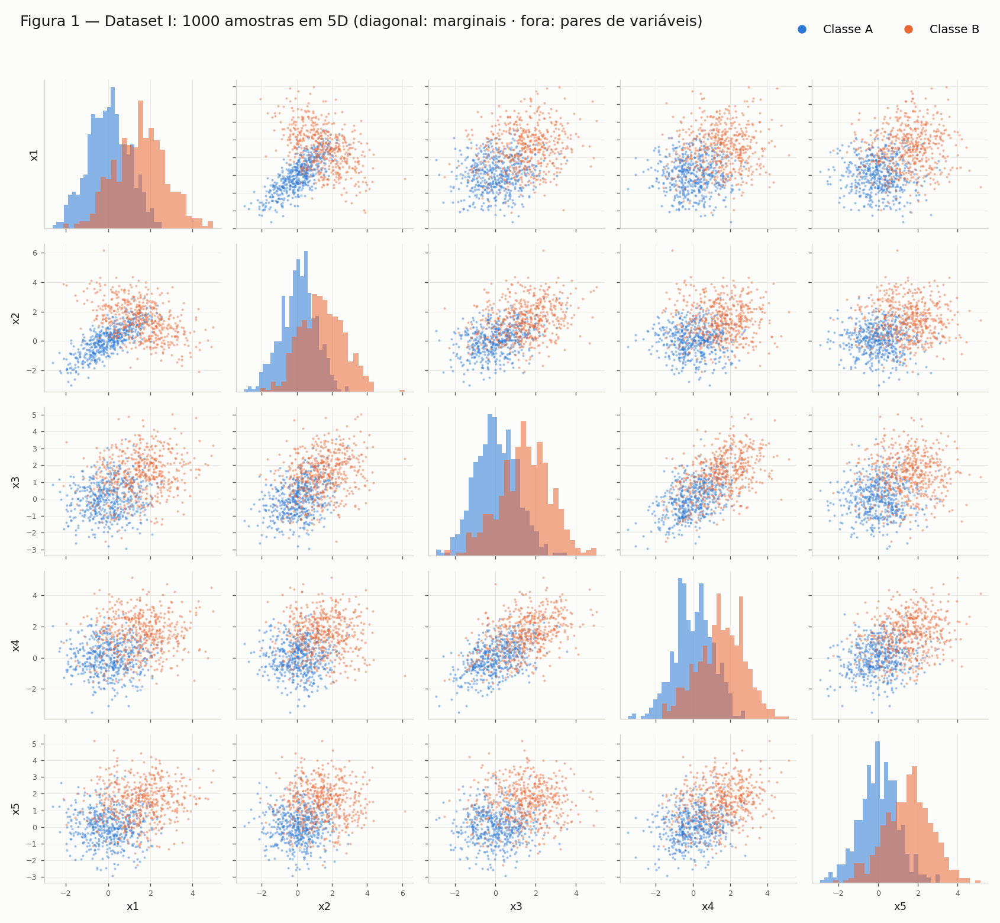
Figura A3 — matriz de dispersão do Dataset I: na diagonal, as marginais; fora dela, os pares de variáveis.
Duas leituras importam. As marginais se sobrepõem muito: um deslocamento de 1.5 com σ entre 1.0 e 1.22 não separa nada sozinho — só a combinação das cinco dimensões separa. E a inversão de sinal da correlação x₁–x₂ (+0.8 em A, −0.7 em B) faz as duas elipses se cruzarem em X naquele painel: é informação de forma, não de posição, que uma fronteira linear não aproveita e uma quadrática sim.
B — Dataset II: cascas concêntricas¶
Mesmo tamanho, mesma dimensão, estrutura radial: direção u = v/‖v‖ com v ~ N(0, I₅), o que dá uma direção uniforme na esfera unitária; raio ρ ~ N(2.0, 0.4) para a classe C e N(5.0, 0.4) para a D; e x = ρ·u.
Ambiguidade do enunciado
O enunciado escreve ρ ~ N(2.0, 0.4) sem dizer se 0.4 é desvio ou variância. Adotei desvio padrão — a leitura que casa com o Exercício 1 — e isolei a escolha na constante SIGMA_RHO. As cascas não se tocam em nenhuma das duas leituras.
| Classe | Raio médio (alvo) | Desvio do raio | Desvio por eixo | Esperado ρ/√5 |
|---|---|---|---|---|
| C | 2.027 (2.0) | 0.405 | ≈ 0.92 | 0.894 |
| D | 5.026 (5.0) | 0.421 | ≈ 2.26 | 2.236 |
A média por eixo dá ≈ 0 nas duas classes, como esperado de uma direção isotrópica, e o desvio por eixo bate com ρ/√5 — a variância do raio se reparte igualmente entre as cinco coordenadas. As cascas não se tocam: o maior raio de C é 3.224 e o menor de D é 3.244, então o corte ‖x‖ = 3.234 separa as duas classes com 0% de erro.
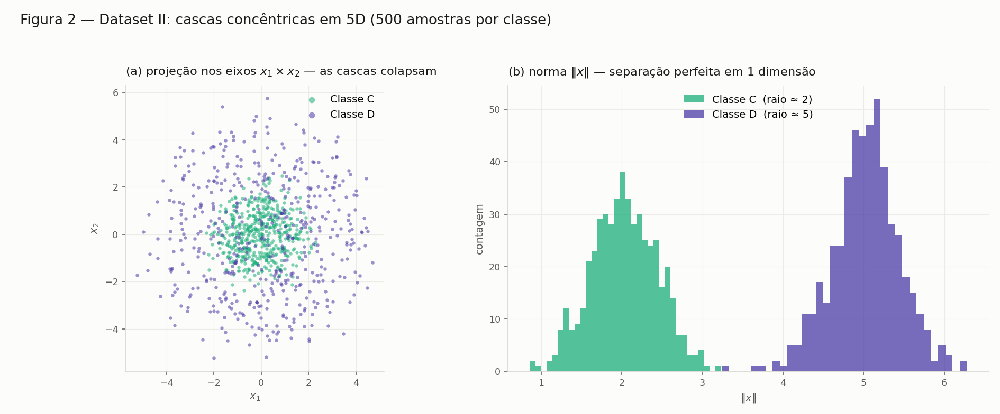
Figura A4 — o contraste central do Dataset II. À esquerda, a projeção em dois eixos: a classe D não aparece como um anel, porque em 5D projetar uma casca sobre duas coordenadas preenche o disco — D cobre inteiramente C. À direita, a norma ‖x‖, uma única dimensão derivada, separa perfeitamente.
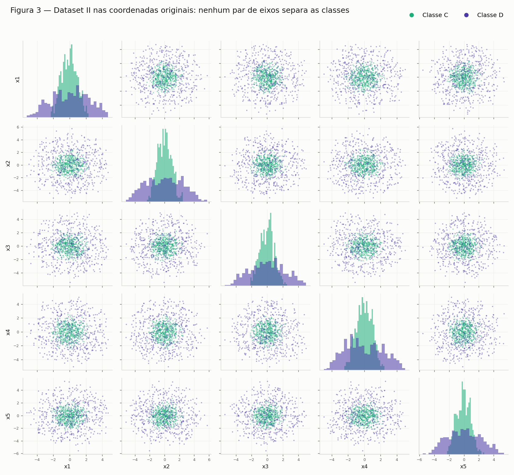
Figura A5 — os vinte painéis de pares de eixos originais. Em todos, a nuvem de D envolve a de C: nenhum par de coordenadas separa as classes.
Diferença estrutural em relação ao Dataset I. Lá as classes têm médias diferentes, então existe uma direção w em que as projeções se afastam. Aqui as duas classes têm a mesma média (zero): qualquer hiperplano w·x + b recebe as duas distribuições centradas no mesmo ponto. A não-linearidade deixa de ser um ganho marginal e vira a única saída.
C — Visualize e compare¶
PCA por SVD sobre os dados centrados (não padronizados — as escalas já são comparáveis), aplicada aos dois datasets e plotada lado a lado.
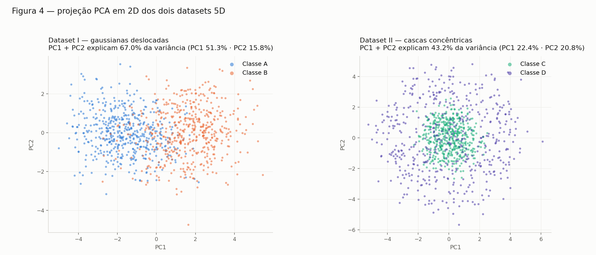
Figura 4 — projeção PCA em 2D dos dois datasets. No Dataset I as classes se separam ao longo de PC1; no Dataset II a projeção vira dois discos concêntricos, com C afogada dentro de D.
| Dataset | PC1 | PC2 | PC3 | PC4 | PC5 | PC1+PC2 |
|---|---|---|---|---|---|---|
| I — gaussianas | 51.3% | 15.8% | 14.4% | 12.5% | 6.0% | 67.0% |
| II — cascas | 22.4% | 20.8% | 20.6% | 19.0% | 17.1% | 43.2% |
Em qual dos datasets a projeção 2D preserva melhor a informação relevante para a classificação?
No Dataset I — por dois motivos que vale separar.
Quantidade: 67.0% contra 43.2%. No Dataset I existem direções privilegiadas (as correlações fortes das duas covariâncias, mais o deslocamento das médias) e a variância se concentra em PC1. No Dataset II o espectro é plano, ≈ 20% em cada componente: a distribuição é isotrópica, nenhuma direção é especial, e 43.2% é praticamente o 2/5 = 40% que se obteria escolhendo dois eixos ao acaso.
Qualidade — que é o ponto: variância explicada não é a mesma coisa que informação para classificar. No Dataset I a direção de maior variância coincide com a direção que separa as classes (μ_B − μ_A aponta para [1,1,1,1,1]), então PC1 sozinho já quase resolve. No Dataset II a informação discriminante está em ‖x‖² = Σxᵢ², uma função quadrática de todas as cinco coordenadas — nenhuma projeção linear 2D a preserva. Ao descartar 3 eixos, o raio projetado vira um subestimador ruidoso do raio real e as cascas borram uma sobre a outra. A PCA não falhou por escolher mal os componentes: não existe projeção linear 2D boa.
Medidas em 5D¶
| Dataset | ‖μ₁ − μ₂‖ | Raio classe 1 | Raio classe 2 | Sobreposição dos raios |
|---|---|---|---|---|
| I (A, B) | 3.264 (teórico 1.5·√5 = 3.354) | 2.109 ± 0.788 | 4.175 ± 1.161 | 79.6% |
| II (C, D) | 0.159 (teórico 0) | 2.027 ± 0.405 | 5.026 ± 0.421 | 0.0% |
"Sobreposição" é a fração de amostras na faixa de raios onde as duas classes coexistem.
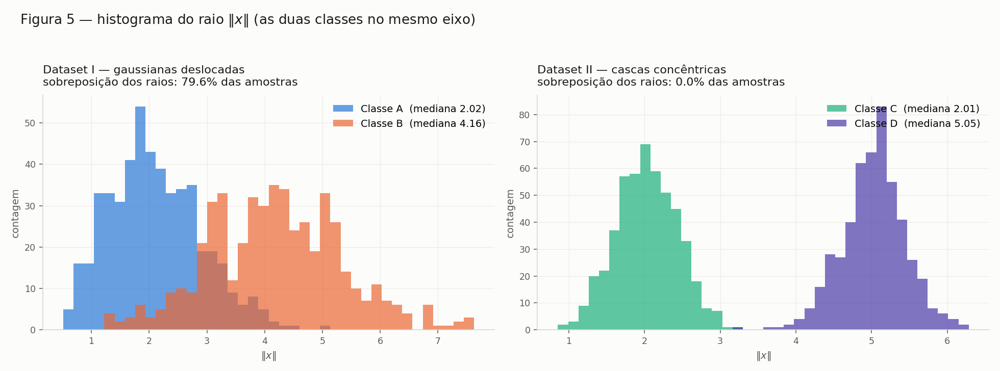
Figura 5 — histograma do raio ‖x‖ com as duas classes sobrepostas no mesmo eixo, por dataset.
- Dataset I: centros bem separados (3.26), mas os raios se misturam em 79.6% — a classe A tem pontos longe da origem e a B tem pontos perto. O raio ainda carrega sinal parcial (um corte em
‖x‖acerta 86.3%), mas fica abaixo da fronteira linear (88.7%): a feature certa aqui é a projeção numa direção, não a distância à origem. - Dataset II: centros coincidentes (0.159 é ruído amostral com n = 500), então nenhuma direção separa — mas os raios não se tocam. O raio é a feature perfeita.
D — Análise¶
No Dataset II a distância entre os centros é ≈ 0 mas os histogramas de raio ficam separados. O que isso diz sobre separar as classes com um hiperplano?
Diz que as classes são perfeitamente separáveis, mas não por um hiperplano — a informação que as distingue não é do tipo que um hiperplano consegue ler.
Um hiperplano decide por w·x + b > 0: ele só enxerga o dado através da projeção escalar w·x, uma única direção. Como os centros coincidem (‖μ_C − μ_D‖ = 0.159 ≈ 0) e as duas distribuições são esfericamente simétricas em torno da origem, w·x é simétrico em torno de zero nas duas classes, para qualquer w — elas diferem apenas na largura (desvio ρ/√5: 0.89 para C, 2.24 para D), não na posição, e um limiar não distingue "estreito" de "largo". A informação existe, mas está em ‖x‖, que depende de todas as coordenadas e de forma quadrática: é informação de escala, e projeção escalar destrói escala.
Medido: a regressão logística sobre as 5 coordenadas cruas atinge 88.7% no Dataset I e 53.6% no Dataset II.
Por que a estrutura do Dataset II não pode ser resolvida por uma fronteira linear, por mais dados que se colete?
Porque o limite não é estatístico, é representacional. Mais dados reduzem a incerteza sobre os parâmetros de uma fronteira; não mudam o conjunto de fronteiras que a família consegue expressar. O conjunto separador verdadeiro é {x : ‖x‖ < 3.23}, uma hiperesfera — região limitada e fechada. Um semiespaço {x : w·x + b > 0} é ilimitado em todas as direções perpendiculares a w. Nenhum semiespaço é uma bola, e isso é uma afirmação de geometria: independe de quantas amostras existam.
| n por classe | Regressão logística | Melhor hiperplano possível |
|---|---|---|
| 500 | 53.4% | 63.5% |
| 2 000 | 52.1% | 63.2% |
| 10 000 | 51.0% | 62.1% |
| 50 000 | 50.5% | 61.9% |
A segunda coluna é o teto de qualquer hiperplano: varri direções aleatórias e, para cada uma, todos os cortes possíveis. Ele fica em ~62% e não sobe com mais dados — vem de um truque degenerado: cortar longe do centro, onde só existem pontos de D, porque a classe mais espalhada tem caudas mais longas. É o máximo que a geometria de um semiespaço arranca de duas esferas concêntricas, e continua a 38 pontos percentuais da solução. A regressão logística fica abaixo desse teto porque otimiza log-loss, e o ótimo de log-loss no problema simétrico é literalmente w = 0.
Uma projeção 2D em que as classes parecem misturadas prova que elas são inseparáveis no espaço original?
Não. A implicação só vale num sentido:
- a projeção separa ⟹ o espaço original separa (a projeção é uma função dos dados; compor essa função com o corte é um classificador válido em 5D);
- a projeção não separa ⟹ nada se conclui sobre o espaço original.
A PCA torna esse falso negativo ainda mais provável, por ser linear (só faz combinações Σaᵢxᵢ, nunca produtos ou quadrados) e não supervisionada (maximiza variância total sem olhar os rótulos — ela nem sabe que existem classes).
Justificando com os resultados deste exercício, o Dataset II é o contraexemplo completo: PC1+PC2 explicam 43.2% com as classes visualmente misturadas (Figura 4) e os vinte painéis da Figura A5 não separam nada; e ainda assim a sobreposição dos raios é 0% e um único corte acerta 100%. A projeção falhou, não os dados.
A função que separa o Dataset II¶
f(x) = x₁² + x₂² + x₃² + x₄² + x₅² − 10.46 (10.46 = 3.234²)
f(x) < 0 → Classe C f(x) > 0 → Classe D acurácia: 100.0%
O limiar é o quadrado do ponto médio entre o maior raio de C (3.224) e o menor de D (3.244).
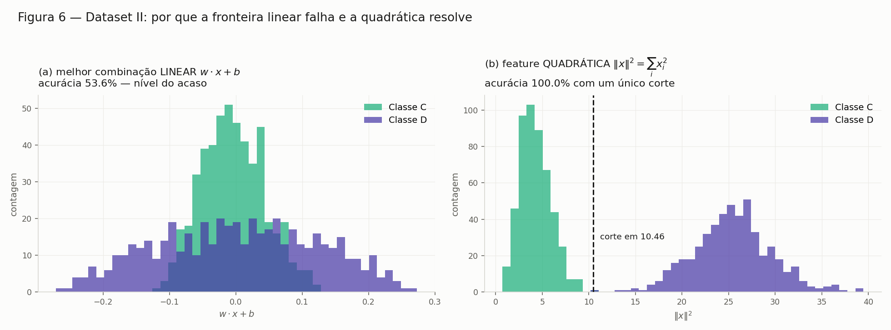
Figura A6 — à esquerda, a melhor combinação linear empilha as duas classes em torno de zero; só as larguras diferem. À direita, em coordenadas quadráticas, viram dois montes disjuntos com um corte trivial entre eles.
O detalhe que interessa para redes neurais: f é uma função linear das features transformadas z = (x₁², …, x₅²) — é o mesmo hiperplano w·z + b com w = [1,1,1,1,1] e b = −10.46. O problema nunca foi precisar de uma fronteira exótica; era que a fronteira é linear no espaço errado. É exatamente o que uma camada oculta faz: aprende uma transformação z = φ(x) que torna o problema linearmente separável, e a camada de saída traça o hiperplano.
| Dataset | ‖μ₁ − μ₂‖ | Acurácia linear | Acurácia com ‖x‖² | Fronteira necessária |
|---|---|---|---|---|
| I | 3.264 | 88.7% | 86.3% | hiperplano |
| II | 0.159 | 53.6% (teto 62%) | 100.0% | hiperesfera |
As duas colunas do meio trocam de vencedor entre as linhas: a mesma feature que resolve um dataset é a pior escolha para o outro.
Código do Exercício 2¶
code/ex2_dataset1.py — gaussianas 5D e Figura A3
"""
Exercicio 2 - Parte A: Dataset I, gaussianas multivariadas deslocadas em 5D.
Classe A: 500 amostras, mu_A = 0, Sigma_A (correlacoes positivas)
Classe B: 500 amostras, mu_B = 1.5, Sigma_B (variancia maior, x1-x2 anticorrelacionados)
"""
import numpy as np
import pandas as pd
import matplotlib.pyplot as plt
from _saida import figura, dado
SEED = 42
N_POR_CLASSE = 500
D = 5
FEATURES = [f"x{i+1}" for i in range(D)]
MU = {
"A": np.zeros(D),
"B": np.full(D, 1.5),
}
SIGMA = {
"A": np.array([
[1.0, 0.8, 0.1, 0.0, 0.0],
[0.8, 1.0, 0.3, 0.0, 0.0],
[0.1, 0.3, 1.0, 0.5, 0.0],
[0.0, 0.0, 0.5, 1.0, 0.2],
[0.0, 0.0, 0.0, 0.2, 1.0],
]),
"B": np.array([
[ 1.5, -0.7, 0.2, 0.0, 0.0],
[-0.7, 1.5, 0.4, 0.0, 0.0],
[ 0.2, 0.4, 1.5, 0.6, 0.0],
[ 0.0, 0.0, 0.6, 1.5, 0.3],
[ 0.0, 0.0, 0.0, 0.3, 1.5],
]),
}
CORES = {"A": "#2a78d6", "B": "#eb6834"}
SURFACE = "#fcfcfb"
TINTA = "#1a1a19"
TINTA_2 = "#5c5b55"
def checar_covariancias():
"""Uma matriz de covariancia precisa ser simetrica e positiva definida."""
for c, S in SIGMA.items():
simetrica = np.allclose(S, S.T)
autoval = np.linalg.eigvalsh(S)
print(f" Sigma_{c}: simetrica={simetrica} | "
f"autovalores {np.array2string(autoval, precision=3)} | "
f"pos. definida={bool(autoval.min() > 0)}")
def gerar_dados(seed=SEED, n=N_POR_CLASSE):
"""500 amostras por classe de uma normal multivariada 5D."""
rng = np.random.default_rng(seed)
Xs, ys = [], []
for c in ("A", "B"):
Xs.append(rng.multivariate_normal(MU[c], SIGMA[c], size=n))
ys.append(np.full(n, c))
return np.vstack(Xs), np.concatenate(ys)
def _estilo(ax):
ax.set_facecolor(SURFACE)
ax.grid(True, color="#ecebe6", linewidth=0.6, zorder=0)
ax.set_axisbelow(True)
for lado in ("top", "right"):
ax.spines[lado].set_visible(False)
for lado in ("left", "bottom"):
ax.spines[lado].set_color("#d5d4ce")
ax.tick_params(colors=TINTA_2, labelsize=7)
def figura_1(X, y, caminho=None):
caminho = caminho or figura("figA3_dataset1_matriz.png")
"""Matriz 5x5: diagonal = distribuicao marginal; fora = dispersao 2D."""
fig, axes = plt.subplots(D, D, figsize=(13, 12), dpi=130)
fig.patch.set_facecolor(SURFACE)
for i in range(D):
for j in range(D):
ax = axes[i, j]
_estilo(ax)
if i == j:
for c in ("A", "B"):
ax.hist(X[y == c, i], bins=28, color=CORES[c], alpha=0.55,
density=True, zorder=2)
ax.set_yticks([])
else:
for c in ("A", "B"):
ax.scatter(X[y == c, j], X[y == c, i], s=5, c=CORES[c],
alpha=0.45, linewidths=0, zorder=2)
if i == D - 1:
ax.set_xlabel(FEATURES[j], color=TINTA, fontsize=10)
else:
ax.set_xticklabels([])
if j == 0:
ax.set_ylabel(FEATURES[i], color=TINTA, fontsize=10)
elif i != j:
ax.set_yticklabels([])
handles = [plt.Line2D([], [], marker="o", linestyle="", markersize=7,
color=CORES[c], label=f"Classe {c}") for c in ("A", "B")]
fig.legend(handles=handles, frameon=False, fontsize=11, ncol=2,
loc="upper right", bbox_to_anchor=(0.99, 0.985))
fig.suptitle("Figura 1 — Dataset I: 1000 amostras em 5D "
"(diagonal: marginais · fora: pares de variáveis)",
fontsize=14, color=TINTA, x=0.02, ha="left", y=0.985)
fig.tight_layout(rect=(0, 0, 1, 0.955))
fig.savefig(caminho, facecolor=SURFACE)
print(f"Figura salva em: {caminho}")
if __name__ == "__main__":
print("=== validacao das matrizes de covariancia ===")
checar_covariancias()
X, y = gerar_dados()
df = pd.DataFrame(X, columns=FEATURES).assign(classe=y)
df.to_csv(dado("dataset1.csv"), index=False)
print(f"\nX: {X.shape} | classes: {dict(zip(*np.unique(y, return_counts=True)))}")
for c in ("A", "B"):
Xc = X[y == c]
print(f"\n--- Classe {c} ---")
print(" media amostral :", np.array2string(Xc.mean(axis=0), precision=3,
suppress_small=True))
print(" media teorica :", np.array2string(MU[c], precision=3))
print(" erro max |cov_amostral - Sigma| =",
f"{np.abs(np.cov(Xc, rowvar=False) - SIGMA[c]).max():.3f}")
figura_1(X, y)
code/ex2_dataset2.py — cascas concêntricas, Figuras A4 e A5
"""
Exercicio 2 - Parte B: Dataset II, cascas concentricas em 5D.
Direcao u uniforme na esfera unitaria de R^5 (v ~ N(0, I5), u = v/||v||);
raio rho ~ N(2.0, 0.4) para a classe C (nucleo) e N(5.0, 0.4) para a D (casca);
cada ponto e x = rho * u.
Nota: o enunciado escreve rho ~ N(2.0, 0.4). Adotamos 0.4 como DESVIO PADRAO
(SIGMA_RHO abaixo); se o 0.4 for variancia, basta usar sqrt(0.4) = 0.632.
"""
import numpy as np
import pandas as pd
import matplotlib.pyplot as plt
from _saida import figura, dado
from ex2_dataset1 import D, FEATURES, SEED, N_POR_CLASSE, SURFACE, TINTA, TINTA_2, _estilo
RAIOS = {"C": 2.0, "D": 5.0} # raio medio de cada casca
SIGMA_RHO = 0.4 # desvio padrao do raio
CORES = {"C": "#1baf7a", "D": "#4a3aa7"}
def gerar_dados(seed=SEED, n=N_POR_CLASSE):
"""500 amostras por classe: direcao isotropica x raio gaussiano."""
rng = np.random.default_rng(seed)
Xs, ys = [], []
for c, raio in RAIOS.items():
v = rng.standard_normal((n, D)) # N(0, I5)
u = v / np.linalg.norm(v, axis=1, keepdims=True) # uniforme na esfera
rho = rng.normal(raio, SIGMA_RHO, size=(n, 1))
Xs.append(rho * u)
ys.append(np.full(n, c))
return np.vstack(Xs), np.concatenate(ys)
def figura_2(X, y, caminho=None):
caminho = caminho or figura("figA4_cascas.png")
"""(a) o que se ve numa projecao 2D vs (b) o que a norma revela."""
r = np.linalg.norm(X, axis=1)
fig, axes = plt.subplots(1, 2, figsize=(13.5, 5.6), dpi=140)
fig.patch.set_facecolor(SURFACE)
ax = axes[0]
_estilo(ax)
for c in RAIOS:
pts = X[y == c]
ax.scatter(pts[:, 0], pts[:, 1], s=11, c=CORES[c], alpha=0.55,
linewidths=0, label=f"Classe {c}", zorder=2)
ax.set_title("(a) projeção nos eixos $x_1 \\times x_2$ — as cascas colapsam",
fontsize=11.5, color=TINTA, loc="left", pad=10)
ax.set_xlabel("$x_1$", color=TINTA_2)
ax.set_ylabel("$x_2$", color=TINTA_2)
ax.set_aspect("equal")
ax.tick_params(labelsize=9)
ax.legend(frameon=False, fontsize=10, loc="upper right", markerscale=1.8)
ax = axes[1]
_estilo(ax)
for c in RAIOS:
ax.hist(r[y == c], bins=34, color=CORES[c], alpha=0.75, zorder=2,
label=f"Classe {c} (raio ≈ {RAIOS[c]:g})")
ax.set_title("(b) norma $\\|x\\|$ — separação perfeita em 1 dimensão",
fontsize=11.5, color=TINTA, loc="left", pad=10)
ax.set_xlabel("$\\|x\\|$", color=TINTA_2)
ax.set_ylabel("contagem", color=TINTA_2)
ax.tick_params(labelsize=9)
ax.legend(frameon=False, fontsize=10, loc="upper center")
fig.suptitle("Figura 2 — Dataset II: cascas concêntricas em 5D "
"(500 amostras por classe)",
fontsize=13.5, color=TINTA, x=0.02, ha="left", y=0.97)
fig.tight_layout(rect=(0, 0, 1, 0.93))
fig.savefig(caminho, facecolor=SURFACE)
print(f"Figura salva em: {caminho}")
def figura_3(X, y, caminho=None):
caminho = caminho or figura("figA5_dataset2_matriz.png")
"""Matriz 5x5 - para comparar com a Figura 1 do Dataset I."""
fig, axes = plt.subplots(D, D, figsize=(13, 12), dpi=130)
fig.patch.set_facecolor(SURFACE)
for i in range(D):
for j in range(D):
ax = axes[i, j]
_estilo(ax)
if i == j:
for c in RAIOS:
ax.hist(X[y == c, i], bins=28, color=CORES[c], alpha=0.55,
density=True, zorder=2)
ax.set_yticks([])
else:
for c in RAIOS:
ax.scatter(X[y == c, j], X[y == c, i], s=5, c=CORES[c],
alpha=0.45, linewidths=0, zorder=2)
if i == D - 1:
ax.set_xlabel(FEATURES[j], color=TINTA, fontsize=10)
else:
ax.set_xticklabels([])
if j == 0:
ax.set_ylabel(FEATURES[i], color=TINTA, fontsize=10)
elif i != j:
ax.set_yticklabels([])
handles = [plt.Line2D([], [], marker="o", linestyle="", markersize=7,
color=CORES[c], label=f"Classe {c}") for c in RAIOS]
fig.legend(handles=handles, frameon=False, fontsize=11, ncol=2,
loc="upper right", bbox_to_anchor=(0.99, 0.985))
fig.suptitle("Figura 3 — Dataset II nas coordenadas originais: "
"nenhum par de eixos separa as classes",
fontsize=14, color=TINTA, x=0.02, ha="left", y=0.985)
fig.tight_layout(rect=(0, 0, 1, 0.955))
fig.savefig(caminho, facecolor=SURFACE)
print(f"Figura salva em: {caminho}")
if __name__ == "__main__":
X, y = gerar_dados()
r = np.linalg.norm(X, axis=1)
pd.DataFrame(X, columns=FEATURES).assign(classe=y, raio=r) \
.to_csv(dado("dataset2.csv"), index=False)
print(f"X: {X.shape} | classes: {dict(zip(*np.unique(y, return_counts=True)))}")
for c, raio in RAIOS.items():
Xc, rc = X[y == c], r[y == c]
print(f"\n--- Classe {c} (raio alvo {raio:g}, sigma {SIGMA_RHO:g}) ---")
print(f" raio amostral : media {rc.mean():.3f} | desvio {rc.std(ddof=1):.3f}"
f" | min {rc.min():.3f} | max {rc.max():.3f}")
print(" media por eixo:", np.array2string(Xc.mean(axis=0), precision=3,
suppress_small=True),
" (esperado ~0: a direcao e isotropica)")
print(f" desvio por eixo: "
f"{np.array2string(Xc.std(axis=0, ddof=1), precision=3)}"
f" (esperado ~ raio/sqrt(5) = {raio / np.sqrt(D):.3f})")
fronteira = (r[y == "C"].max() + r[y == "D"].min()) / 2
print(f"\nMaior raio de C = {r[y == 'C'].max():.3f} | "
f"menor raio de D = {r[y == 'D'].min():.3f}")
print(f"-> as cascas nao se tocam: ||x|| = {fronteira:.3f} separa as duas "
f"classes com 0% de erro")
figura_2(X, y)
figura_3(X, y)
code/ex2c_pca.py — PCA por SVD, Figuras 4 e 5
"""
Exercicio 2 - Parte C: Visualize e compare.
Figura 4: PCA de cada dataset em 2D, lado a lado, colorido por classe.
Reporta a variancia explicada por PC1 e PC2 e a distancia entre os centros em 5D.
Figura 5: histograma do raio ||x||, as duas classes sobrepostas, por dataset.
"""
import numpy as np
import matplotlib.pyplot as plt
from _saida import figura, dado
import ex2_dataset1 as d1
import ex2_dataset2 as d2
from ex2_dataset1 import SURFACE, TINTA, TINTA_2, _estilo
DATASETS = {
"Dataset I — gaussianas deslocadas": {
"classes": ("A", "B"), "cores": d1.CORES, "gerar": d1.gerar_dados},
"Dataset II — cascas concêntricas": {
"classes": ("C", "D"), "cores": d2.CORES, "gerar": d2.gerar_dados},
}
def pca(X, k=2):
"""PCA por SVD sobre os dados centrados (nao padronizados: as escalas ja
sao comparaveis). Retorna scores (N,k), razao de variancia explicada (d,)."""
Xc = X - X.mean(axis=0)
U, S, Vt = np.linalg.svd(Xc, full_matrices=False)
var = S ** 2 / (len(X) - 1)
return Xc @ Vt[:k].T, var / var.sum()
def figura_4(dados, caminho=None):
caminho = caminho or figura("fig04_pca.png")
fig, axes = plt.subplots(1, 2, figsize=(14, 6), dpi=140)
fig.patch.set_facecolor(SURFACE)
for ax, (nome, d) in zip(axes, dados.items()):
_estilo(ax)
Z, ratio = d["pca"]
for c in d["classes"]:
pts = Z[d["y"] == c]
ax.scatter(pts[:, 0], pts[:, 1], s=12, c=d["cores"][c], alpha=0.55,
linewidths=0, label=f"Classe {c}", zorder=2)
ax.set_title(f"{nome}\nPC1 + PC2 explicam "
f"{ratio[:2].sum():.1%} da variância "
f"(PC1 {ratio[0]:.1%} · PC2 {ratio[1]:.1%})",
fontsize=11.5, color=TINTA, loc="left", pad=10)
ax.set_xlabel("PC1", color=TINTA_2)
ax.set_ylabel("PC2", color=TINTA_2)
ax.set_aspect("equal")
ax.tick_params(labelsize=9)
ax.legend(frameon=False, fontsize=10, loc="upper right", markerscale=1.8)
fig.suptitle("Figura 4 — projeção PCA em 2D dos dois datasets 5D",
fontsize=13.5, color=TINTA, x=0.02, ha="left", y=0.97)
fig.tight_layout(rect=(0, 0, 1, 0.93))
fig.savefig(caminho, facecolor=SURFACE)
print(f"Figura salva em: {caminho}")
def figura_5(dados, caminho=None):
caminho = caminho or figura("fig05_raios.png")
fig, axes = plt.subplots(1, 2, figsize=(14, 5.2), dpi=140)
fig.patch.set_facecolor(SURFACE)
for ax, (nome, d) in zip(axes, dados.items()):
_estilo(ax)
r = d["raio"]
bins = np.histogram_bin_edges(r, bins=40)
for c in d["classes"]:
rc = r[d["y"] == c]
ax.hist(rc, bins=bins, color=d["cores"][c], alpha=0.70, zorder=2,
label=f"Classe {c} (mediana {np.median(rc):.2f})")
ax.set_title(f"{nome}\nsobreposição dos raios: {d['sobrep']:.1%} das amostras",
fontsize=11.5, color=TINTA, loc="left", pad=10)
ax.set_xlabel("$\\|x\\|$", color=TINTA_2)
ax.set_ylabel("contagem", color=TINTA_2)
ax.tick_params(labelsize=9)
ax.legend(frameon=False, fontsize=10, loc="upper right")
fig.suptitle("Figura 5 — histograma do raio $\\|x\\|$ (as duas classes no mesmo eixo)",
fontsize=13.5, color=TINTA, x=0.02, ha="left", y=0.965)
fig.tight_layout(rect=(0, 0, 1, 0.925))
fig.savefig(caminho, facecolor=SURFACE)
print(f"Figura salva em: {caminho}")
def sobreposicao_1d(r, y, classes):
"""Fracao de pontos na faixa em que as duas classes coexistem
[max(min), min(max)] - medida simples de quanto o raio sozinho confunde."""
r1, r2 = r[y == classes[0]], r[y == classes[1]]
lo, hi = max(r1.min(), r2.min()), min(r1.max(), r2.max())
return 0.0 if lo >= hi else float(((r >= lo) & (r <= hi)).mean())
if __name__ == "__main__":
dados = {}
for nome, d in DATASETS.items():
X, y = d["gerar"]()
d = dict(d)
d["X"], d["y"] = X, y
d["pca"] = pca(X)
d["raio"] = np.linalg.norm(X, axis=1)
d["sobrep"] = sobreposicao_1d(d["raio"], y, d["classes"])
dados[nome] = d
print("=== C.2 — variancia explicada pela PCA ===")
for nome, d in dados.items():
r = d["pca"][1]
print(f"\n{nome}")
print(" por componente:", " ".join(f"PC{i+1} {v:6.1%}" for i, v in enumerate(r)))
print(f" PC1 + PC2 = {r[:2].sum():.1%}")
print("\n=== C.3 — geometria em 5D ===")
for nome, d in dados.items():
c1, c2 = d["classes"]
m1, m2 = d["X"][d["y"] == c1].mean(axis=0), d["X"][d["y"] == c2].mean(axis=0)
print(f"\n{nome}")
print(f" centro {c1}: {np.array2string(m1, precision=3, suppress_small=True)}")
print(f" centro {c2}: {np.array2string(m2, precision=3, suppress_small=True)}")
print(f" ||mu_{c1} - mu_{c2}|| = {np.linalg.norm(m1 - m2):.3f}")
for c in (c1, c2):
rc = d["raio"][d["y"] == c]
print(f" raio da classe {c}: media {rc.mean():.3f} | "
f"desvio {rc.std(ddof=1):.3f} | faixa [{rc.min():.2f}, {rc.max():.2f}]")
print(f" sobreposicao dos raios: {d['sobrep']:.1%} das amostras")
figura_4(dados)
figura_5(dados)
code/ex2d_analise.py — regressão logística, teto do hiperplano, Figura A6
"""
Exercicio 2 - Parte D: Analise.
Verifica empiricamente as tres afirmacoes discutidas no README:
1. o melhor classificador LINEAR no Dataset II fica no nivel do acaso;
2. isso nao melhora com mais dados (varre n = 500 ... 50000);
3. a feature ||x||^2 (soma dos quadrados) separa perfeitamente.
Regressao logistica implementada com numpy (gradiente em batch completo).
"""
import numpy as np
import matplotlib.pyplot as plt
from _saida import figura, dado
import ex2_dataset1 as d1
import ex2_dataset2 as d2
from ex2_dataset1 import SURFACE, TINTA, TINTA_2, _estilo
def logistica(X, t, epocas=4000, lr=0.5):
"""Regressao logistica binaria (t in {0,1}) por gradiente descendente.
Padroniza as entradas so para o gradiente se comportar bem."""
m, s = X.mean(axis=0), X.std(axis=0)
Z = np.column_stack([(X - m) / s, np.ones(len(X))])
w = np.zeros(Z.shape[1])
for _ in range(epocas):
p = 1 / (1 + np.exp(-Z @ w))
w -= lr * (Z.T @ (p - t)) / len(Z)
return w, (Z @ w)
def acuracia(score, t):
return float(((score > 0).astype(int) == t).mean())
def melhor_limiar(v, t):
"""Melhor acuracia possivel com UM corte sobre a variavel v.
Varre todos os cortes candidatos (pontos medios entre valores consecutivos)."""
ordem = np.argsort(v)
vs, ts = v[ordem], t[ordem]
cortes = (vs[:-1] + vs[1:]) / 2
# acertos de "v > corte -> classe 1", para cada corte, via soma acumulada
acima = ts.sum() - np.cumsum(ts)[:-1] # positivos acima do corte
abaixo = np.cumsum(1 - ts)[:-1] # negativos abaixo do corte
acc = (acima + abaixo) / len(v)
acc = np.maximum(acc, 1 - acc) # permite inverter o sentido
i = int(np.argmax(acc))
return float(acc[i]), float(cortes[i])
def melhor_hiperplano(X, t, n_dir=20, seed=0):
"""Teto do que QUALQUER hiperplano consegue: varre direcoes aleatorias e,
para cada uma, o melhor corte. A regressao logistica fica abaixo disso
porque otimiza log-loss, e no Dataset II o otimo de log-loss e w = 0."""
rng = np.random.default_rng(seed)
W = rng.standard_normal((n_dir, X.shape[1]))
W /= np.linalg.norm(W, axis=1, keepdims=True)
return max(melhor_limiar(X @ w, t)[0] for w in W)
def figura_6(X, t, caminho=None):
caminho = caminho or figura("figA6_linear_quadratica.png")
w, score = logistica(X, t)
q = (X ** 2).sum(axis=1)
fig, axes = plt.subplots(1, 2, figsize=(14, 5.2), dpi=140)
fig.patch.set_facecolor(SURFACE)
cores = [d2.CORES["C"], d2.CORES["D"]]
nomes = ["Classe C", "Classe D"]
for ax, v, titulo, xlabel in [
(axes[0], score,
f"(a) melhor combinação LINEAR $w\\cdot x + b$\nacurácia "
f"{acuracia(score, t):.1%} — nível do acaso", "$w \\cdot x + b$"),
(axes[1], q,
f"(b) feature QUADRÁTICA $\\|x\\|^2 = \\sum_i x_i^2$\nacurácia "
f"{melhor_limiar(q, t)[0]:.1%} com um único corte", "$\\|x\\|^2$"),
]:
_estilo(ax)
bins = np.histogram_bin_edges(v, bins=45)
for k in (0, 1):
ax.hist(v[t == k], bins=bins, color=cores[k], alpha=0.72,
label=nomes[k], zorder=2)
ax.set_title(titulo, fontsize=11.5, color=TINTA, loc="left", pad=10)
ax.set_xlabel(xlabel, color=TINTA_2)
ax.set_ylabel("contagem", color=TINTA_2)
ax.tick_params(labelsize=9)
ax.legend(frameon=False, fontsize=10, loc="upper right")
axes[1].axvline(melhor_limiar(q, t)[1], color=TINTA, linewidth=1.6,
linestyle="--", zorder=5)
axes[1].annotate(f"corte em {melhor_limiar(q, t)[1]:.2f}",
(melhor_limiar(q, t)[1], 0), xytext=(8, 60),
textcoords="offset points", fontsize=9.5, color=TINTA)
fig.suptitle("Figura 6 — Dataset II: por que a fronteira linear falha e a "
"quadrática resolve", fontsize=13.5, color=TINTA, x=0.02,
ha="left", y=0.965)
fig.tight_layout(rect=(0, 0, 1, 0.925))
fig.savefig(caminho, facecolor=SURFACE)
print(f"Figura salva em: {caminho}")
if __name__ == "__main__":
X1, y1 = d1.gerar_dados()
t1 = (y1 == "B").astype(int)
X2, y2 = d2.gerar_dados()
t2 = (y2 == "D").astype(int)
print("=== D.1/D.2 — melhor fronteira LINEAR em cada dataset ===")
for nome, X, t in [("Dataset I ", X1, t1), ("Dataset II", X2, t2)]:
_, score = logistica(X, t)
print(f" {nome}: acuracia da regressao logistica = {acuracia(score, t):.1%}")
print("\n=== D.2 — mais dados resolvem? (Dataset II, so linear) ===")
print(" n/classe | regressao logistica | melhor hiperplano possivel")
for n in (500, 2_000, 10_000, 50_000):
Xn, yn = d2.gerar_dados(seed=1, n=n)
tn = (yn == "D").astype(int)
_, score = logistica(Xn, tn)
print(f" {n:>8} | {acuracia(score, tn):18.1%} | "
f"{melhor_hiperplano(Xn, tn):.1%}")
print("\n=== D.3 — a feature quadratica ===")
q2 = (X2 ** 2).sum(axis=1)
acc, corte = melhor_limiar(q2, t2)
print(f" ||x||^2 no Dataset II: acuracia {acc:.1%} com corte em {corte:.3f} "
f"(raio {np.sqrt(corte):.3f})")
q1 = (X1 ** 2).sum(axis=1)
acc1, corte1 = melhor_limiar(q1, t1)
print(f" ||x||^2 no Dataset I : acuracia {acc1:.1%} (abaixo dos 88.7% da fronteira linear)")
print("\n fronteira sugerida: f(x) = x1^2+x2^2+x3^2+x4^2+x5^2 - "
f"{corte:.2f} -> f(x) > 0 : classe D | f(x) < 0 : classe C")
figura_6(X2, t2)
Exercício 3¶
Abordagem. Dataset Spaceship Titanic (Kaggle, train.csv). Primeiro caracterizei os dados e a assimetria dos gastos; depois separei treino e teste antes de qualquer estatística; e só então montei um pré-processador que aprende tudo no treino e é apenas aplicado no teste. O critério de todas as escolhas foi a mesma pergunta: isso deixa as entradas na faixa onde a tanh ainda tem gradiente?
A — Conheça os dados¶
train.csv: 8 693 linhas × 14 colunas.
Objetivo e alvo. A nave Spaceship Titanic colidiu com uma anomalia espaço-temporal e parte dos passageiros foi transportada para outra dimensão. Transported é o alvo booleano — True significa transportado — e não tem nenhum valor faltante. É uma classificação binária.
Balanceamento: 4 378 True (50.36%) contra 4 315 False (49.64%), razão de 1.015 : 1. Praticamente perfeito, o que tem consequências práticas: acurácia é métrica honesta aqui (o baseline burro acerta 50.4%, não 90%), não é preciso ponderar classes nem reamostrar, e a saída pode ser um único neurônio sigmoide sem ajuste de limiar.
Features por tipo¶
| Tipo | Colunas | Observação |
|---|---|---|
| Numéricas (6) | Age; RoomService, FoodCourt, ShoppingMall, Spa, VRDeck |
Age vai de 0 a 79; os gastos, de 0 a 29 813 |
| Categóricas (5) | HomePlanet (3), Destination (3), CryoSleep (2), VIP (2), Cabin (6 560) |
Cabin é composta: deck/num/side |
| Identificadores (2) | PassengerId, Name |
fora do modelo |
Três achados estruturais que já apontam para o pré-processamento:
Cabinnão é uma categórica comum. Com 6 560 valores distintos em 8 693 linhas, um one-hot direto criaria mais colunas que linhas. Ela é composta — deck ∈ {A…G, T}, num ∈ [0, 1894], side ∈ {P, S}.PassengerIdtem estrutura (gggg_pp): são 6 217 grupos para 8 693 passageiros, ou seja, muita gente viaja acompanhada.CryoSleepdomina os gastos: dos 3 037 passageiros em criosono, exatamente zero consumiram qualquer coisa — e 81.8% deles foram transportados, contra 32.9% dos demais.
Valores faltantes¶
| Coluna | Faltantes | % | Coluna | Faltantes | % |
|---|---|---|---|---|---|
CryoSleep |
217 | 2.50% | FoodCourt |
183 | 2.11% |
ShoppingMall |
208 | 2.39% | Spa |
183 | 2.11% |
VIP |
203 | 2.34% | Destination |
182 | 2.09% |
HomePlanet |
201 | 2.31% | RoomService |
181 | 2.08% |
Name |
200 | 2.30% | Age |
179 | 2.06% |
Cabin |
199 | 2.29% | PassengerId |
0 | 0.00% |
VRDeck |
188 | 2.16% | Transported |
0 | 0.00% |
Coluna a coluna o problema é pequeno — nenhuma passa de 2.5%, e a taxa é notavelmente uniforme, o que sugere ausência aleatória e não uma coluna quebrada. Linha a linha o problema é grande: só 75.99% das linhas estão completas, porque os buracos estão espalhados por doze colunas e raramente coincidem. Um dropna() custaria 2 087 passageiros — um em cada quatro — para resolver buracos que somam ~2% dos valores. Imputar é obrigatório, não preferência de estilo.
Colunas de gasto¶
| Coluna | Média | Mediana | Máximo | Desvio | % zeros | Assimetria |
|---|---|---|---|---|---|---|
RoomService |
224.69 | 0.00 | 14 327 | 666.72 | 64.2% | 6.33 |
FoodCourt |
458.08 | 0.00 | 29 813 | 1 611.49 | 62.8% | 7.10 |
ShoppingMall |
173.73 | 0.00 | 23 492 | 604.70 | 64.3% | 12.63 |
Spa |
311.14 | 0.00 | 22 408 | 1 136.71 | 61.2% | 7.64 |
VRDeck |
304.85 | 0.00 | 24 133 | 1 145.72 | 63.2% | 7.82 |
Como a mediana é zero em todas, a razão média/mediana não existe. Refazendo apenas entre quem gastou (valor > 0), a média fica de 2.0 a 3.7 vezes a mediana:
| Coluna | n (gastaram) | Média | Mediana | Média/mediana | % do gasto total |
|---|---|---|---|---|---|
RoomService |
2 935 | 651.63 | 320.00 | 2.04 | 15.3% |
FoodCourt |
3 054 | 1 276.44 | 396.50 | 3.22 | 31.1% |
ShoppingMall |
2 898 | 508.66 | 195.00 | 2.61 | 11.8% |
Spa |
3 186 | 831.07 | 226.50 | 3.67 | 21.1% |
VRDeck |
3 010 | 861.39 | 260.00 | 3.31 | 20.7% |
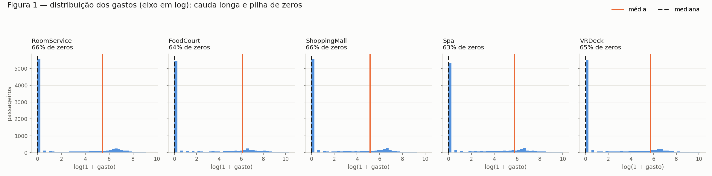
Figura A7 — as cinco distribuições de gasto em escala log(1+x), com a média em laranja e a mediana tracejada. Sem o log, tudo colapsa numa única barra em zero.
Compare média e mediana: o que essa diferença indica sobre espalhamento e assimetria?
Que as distribuições são fortemente assimétricas à direita, com cauda longa — e que a média não descreve nenhum passageiro típico. Três fatos sustentam isso:
- Assimetria positiva extrema. O coeficiente vai de 6.33 a 12.63 (uma normal tem 0; acima de 1 já se considera muito assimétrico). A média é puxada por poucos valores enormes: em
FoodCourt, o máximo (29 813) é 65 vezes a média e está 18 desvios-padrão acima dela. - São duas populações misturadas. A Figura A7 é bimodal: uma pilha de zeros (~63%, boa parte explicada pelo criosono) e um monte de gastadores. A média de 458 cai num vale onde quase ninguém está — ninguém é "médio" aqui.
- O espalhamento é dominado pela cauda. O desvio-padrão supera a média em todas as colunas (
FoodCourt: 1 611 contra 458, coeficiente de variação 3.5), e 10% dos passageiros respondem por 55.9% de todo o gasto da nave (o 1% maior já responde por 13.6%).
B — Separe antes de transformar¶
treino: 6 954 linhas (80.0%) | Transported=True: 50.36%
teste : 1 739 linhas (20.0%) | Transported=True: 50.37%
dataset completo: 50.36%
Split 80/20 estratificado pelo alvo com semente fixa (SEED = 42), implementado embaralhando os índices dentro de cada classe e cortando 20% de cada uma — o que preserva a proporção de True nos dois lados com diferença de uma única linha.
Por que essa separação vem antes da imputação e do escalonamento
Porque o conjunto de teste existe para simular dados que o modelo nunca viu, e essa simulação só é honesta se nenhuma informação do teste tiver influenciado o treino. Se a mediana da imputação, a média e o desvio do escalonamento ou a lista de categorias do one-hot forem calculados sobre o dataset inteiro, cada uma dessas estatísticas carrega um resumo das linhas de teste para dentro do pré-processador, e o modelo passa a treinar com um traço do teste embutido nas features.
O resultado é uma métrica otimista demais, que não se repete em produção, onde os dados novos de fato não participaram do cálculo de nada. Concretamente: aqui tudo é aprendido em pp.fit(treino) e apenas aplicado em pp.transform(teste).
C — Pré-processe¶
C.1 — Dados faltantes: uma estratégia por tipo¶
| Tipo | Estratégia | Justificativa |
|---|---|---|
Numéricas (Age + 5 gastos) |
mediana do treino | As distribuições de gasto têm assimetria de 6 a 12 e a média é puxada pela cauda; a mediana é robusta a outliers e não inventa um valor que ninguém tem. Para Age ela é 27; para os gastos é 0, que é também a moda (>61% de zeros) e o valor estruturalmente correto de quem está em criosono. |
Categóricas (HomePlanet, CryoSleep, Destination, VIP) |
nível explícito Desconhecido |
Preencher com a moda finge uma certeza que não existe e distorce as frequências — VIP viraria 100% False. Um nível próprio preserva a informação "esse dado faltou", que pode ser preditiva, e o one-hot já lida com isso sem custo. |
C.2 — Features categóricas: one-hot¶
| Coluna | Colunas geradas |
|---|---|
HomePlanet |
Earth, Europa, Mars, Desconhecido (4) |
Destination |
55 Cancri e, PSO J318.5-22, TRAPPIST-1e, Desconhecido (4) |
CryoSleep |
False, True, Desconhecido (3) |
VIP |
False, True, Desconhecido (3) |
Mantive todas as categorias (sem drop_first): uma rede neural não sofre com a colinearidade que incomoda uma regressão linear, e a coluna completa torna inequívoco o tratamento abaixo.
Como o código trata uma categoria que aparece no teste mas não no treino
A lista de categorias é congelada no fit, e o transform constrói as colunas por comparação (v == categoria) sobre essa lista fixa. Uma categoria nova simplesmente não casa com nenhuma e produz uma linha de zeros naquele bloco. Testei injetando HomePlanet = "Titan" no teste:
É o comportamento desejado por três motivos: não quebra (nenhuma exceção), não cria coluna nova — o shape do teste continua igual ao do treino, o que é obrigatório para a matriz entrar na rede — e é semanticamente honesto: "não é nenhuma das origens conhecidas" é exatamente o que a rede deve receber. O custo é que Titan fica indistinguível de outra origem desconhecida; se isso importasse, bastaria mapear categorias raras para Desconhecido já no treino.
C.3 — Engenharia de features¶
TotalSpend é a soma das cinco colunas de gasto, calculada depois da imputação — senão um único NaN contaminaria a soma inteira. Ela resume em uma variável "esse passageiro consumiu algo a bordo?", que o item A mostrou ser o eixo mais informativo, e dá à rede o sinal agregado sem depender de ela somar cinco entradas sozinha.
Descartadas: PassengerId e Name (identificadores — memorizá-los é overfitting puro) e Cabin (cardinalidade 6 560). Registro que Cabin não é lixo: dividida em deck/num/side renderia três features de baixa cardinalidade, e é o próximo ganho fácil.
C.4 — Cauda pesada: log(1 + x)¶
Aplicado às cinco colunas de gasto e a TotalSpend. Age não precisa — assimetria 0.42, já bem-comportada. Efeito medido em FoodCourt: assimetria 7.19 → 1.14, faixa [0, 29 813] → [0, 10.3].
Por que essa transformação ajuda uma rede com tanh?
A tanh só é informativa perto da origem: em ±2 ela já entrega ±0.96 e sua derivada caiu para ~0.07; em ±3, ~0.01. Uma entrada gigante empurra a pré-ativação para essa zona plana, o gradiente tende a zero e o neurônio para de aprender.
O ponto crítico é que padronizar sozinho não resolve: o z-score é uma transformação linear, e transformação linear não altera assimetria. O máximo de FoodCourt cru padronizado daria (29 813 − 458)/1 611 = 18.2 — nove vezes além do ponto de saturação — enquanto 63% dos passageiros ficariam amontoados em −0.28.
O log1p é não-linear e comprime a cauda de forma desproporcional: quem gastou 30 000 e quem gastou 3 000 passam a distar 2.3 unidades em vez de 27 000, o que transforma uma razão numa distância. E log1p(0) = 0, então os zeros não precisam de tratamento à parte, e a diferença entre gastar 0 e 100 vira comparável à diferença entre gastar 1 000 e 10 000 — que é o que faz sentido para um consumo.
C.5 — Escalonamento: padronização (z-score)¶
Média 0 e desvio 1, calculados no treino e aplicados nos dois conjuntos.
| Coluna | Mínimo | Máximo |
|---|---|---|
Age |
−2.015 | 3.502 |
RoomService |
−0.643 | 2.874 |
FoodCourt |
−0.650 | 2.855 |
ShoppingMall |
−0.625 | 3.032 |
Spa |
−0.665 | 2.959 |
VRDeck |
−0.644 | 3.008 |
TotalSpend |
−1.155 | 1.687 |
| colunas one-hot | 0.000 | 1.000 |
Mínimo global −2.015, máximo global 3.502 (no teste: −2.015 a 3.432).
Por que z-score e não normalização para [−1, 1]?
Testei os dois. Como os gastos já passaram pelo log1p, a cauda não é mais o problema — o problema passa a ser a pilha de zeros, e é aí que os dois divergem:
| z-score (escolhido) | min-max [−1, 1] | |
|---|---|---|
Onde caem os 63% de zeros de FoodCourt |
−0.65 (região linear da tanh) | −1.00 (borda do intervalo) |
| Fração da coluna fixada no extremo | 0% | 64.9% |
| Desvio-padrão resultante | 1.000 | 0.571 |
O min-max prende quase dois terços dos passageiros exatamente em −1, o ponto mais saturado do intervalo, e encolhe o desvio da coluna para 0.571 — gasta metade da faixa útil com uma constante. O z-score mantém o desvio em 1 por construção e deixa a massa na zona de derivada alta, pagando apenas com alguns valores em 3.5 (idades altas) que a tanh satura sem prejuízo real.
Vale registrar que, se o dado não tivesse passado pelo log1p, a conclusão se inverteria: o min-max ao menos garantiria o intervalo, enquanto o z-score deixaria valores em 18.
D — Verifique e visualize¶
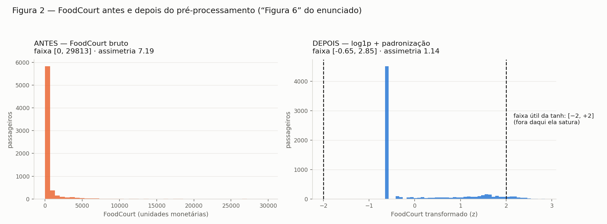
Figura 6 — FoodCourt antes e depois do pré-processamento. À esquerda, faixa [0, 29 813] e assimetria 7.19. À direita, depois de log1p + padronização: faixa [−0.65, 2.85], assimetria 1.14, com as tracejadas marcando a faixa útil da tanh.
A pilha de zeros virou um pico em −0.65, na região de derivada alta, e os gastadores se espalham legivelmente até 2.85. A assimetria residual de 1.14 é a bimodalidade estrutural — quem gastou contra quem não gastou — e não deve ser eliminada: é sinal, não ruído.
Checagens finais¶
X_treino: (6954, 21) | X_teste: (1739, 21) | 21 features
NaN no treino: 0 | no teste: 0
faixa global treino: [-2.015, 3.502] | teste: [-2.015, 3.432]
valores dentro de [-2, 2] (faixa útil da tanh): 98.47%
alvo: treino 50.36% True | teste 50.37% True
| Checagem | Resultado |
|---|---|
| NaN remanescente | 0 nos dois conjuntos ✅ |
| Formato da matriz de features | treino (6954, 21) · teste (1739, 21) ✅ |
Intervalo compatível com tanh |
98.47% dos valores em [−2, 2]; extremo global 3.50 ✅ |
| Composição das 21 features | 7 numéricas (Age, 5 gastos, TotalSpend) + 14 one-hot |
Os arrays finais ficam em data/dados_processados.npz (Xtr, ytr, Xte, yte, colunas).
Quais decisões de pré-processamento mais afetariam o treinamento da rede, e por quê?
A de maior impacto é, de longe, o log1p nas colunas de gasto — sem ele nenhuma outra escolha se sustenta: com valores até 29 813, o z-score entrega entradas em z = 18 e satura de saída todos os neurônios tanh que as recebem, zerando o gradiente já na primeira camada; a rede ficaria efetivamente cega para as cinco features mais informativas do dataset e treinaria só com as categóricas.
Em segundo lugar vem o escalonamento, e a escolha específica do z-score sobre o min-max, que decide onde na curva a massa dos dados cai — o min-max colocaria 65% dos passageiros no extremo −1, desperdiçando a região de derivada alta e retardando a convergência sem nunca aparecer como erro.
Terceiro, a imputação das categóricas por um nível Desconhecido em vez da moda: com ~2.3% de faltantes por coluna, a moda injetaria ~200 rótulos falsos em cada uma e deformaria variáveis já desbalanceadas como VIP (2.34% de True).
As demais decisões — TotalSpend, descartar Cabin, manter todas as colunas do one-hot — mexem na margem: custam ou rendem alguns pontos de acurácia, mas nenhuma impede a rede de aprender. E acima de todas está a ordem: separar antes de transformar não muda o quanto a rede aprende, muda se o número que reportamos no final é verdadeiro.
Código do Exercício 3¶
code/ex3a_conhecer.py — exploração dos dados e Figura A7
"""
Exercicio 3 - Parte A: Conheca os dados (Spaceship Titanic, train.csv).
Objetivo do dataset, balanceamento do alvo, tipos de feature, valores faltantes
e estatisticas das colunas de gasto.
Coloque train.csv nesta pasta (ver README) e rode: python3 ex3a_conhecer.py
"""
import sys
from pathlib import Path
import numpy as np
import pandas as pd
import matplotlib.pyplot as plt
from _saida import figura, dado
CAMINHO = dado("train.csv")
ALVO = "Transported"
ID = ["PassengerId", "Name"] # identificadores, nao sao features
GASTOS = ["RoomService", "FoodCourt", "ShoppingMall", "Spa", "VRDeck"]
CORES = {True: "#2a78d6", False: "#eb6834"}
SURFACE = "#fcfcfb"
TINTA = "#1a1a19"
TINTA_2 = "#5c5b55"
def carregar():
if not CAMINHO.exists():
sys.exit(f"train.csv nao encontrado em {CAMINHO}.\n"
"Baixe em https://www.kaggle.com/competitions/spaceship-titanic/data "
"e coloque o arquivo nesta pasta.")
return pd.read_csv(CAMINHO)
def tipos_de_feature(df):
"""Separa as colunas em numericas e categoricas (ignorando id e alvo)."""
features = [c for c in df.columns if c not in ID + [ALVO]]
num = [c for c in features if pd.api.types.is_numeric_dtype(df[c])]
cat = [c for c in features if c not in num]
return num, cat
def tabela_faltantes(df):
n = len(df)
falt = df.isna().sum()
return (pd.DataFrame({"faltantes": falt, "% do total": 100 * falt / n})
.sort_values("faltantes", ascending=False))
def _estilo(ax):
ax.set_facecolor(SURFACE)
ax.grid(True, axis="y", color="#e6e5e0", linewidth=0.7, zorder=0)
ax.set_axisbelow(True)
for lado in ("top", "right"):
ax.spines[lado].set_visible(False)
for lado in ("left", "bottom"):
ax.spines[lado].set_color("#d5d4ce")
ax.tick_params(colors=TINTA_2, labelsize=9)
def figura_1(df, caminho=None):
caminho = caminho or figura("figA7_gastos.png")
"""Distribuicao das 5 colunas de gasto - a assimetria em imagem."""
fig, axes = plt.subplots(1, len(GASTOS), figsize=(17, 4.2), dpi=140,
sharey=True)
fig.patch.set_facecolor(SURFACE)
for ax, col in zip(axes, GASTOS):
_estilo(ax)
v = df[col].dropna()
# log1p so para o eixo: sem isso, tudo colapsa numa barra em zero
ax.hist(np.log1p(v), bins=40, color="#2a78d6", alpha=0.8, zorder=2)
ax.axvline(np.log1p(v.mean()), color="#eb6834", linewidth=2, zorder=4)
ax.axvline(np.log1p(v.median()), color=TINTA, linewidth=2,
linestyle="--", zorder=4)
zeros = (v == 0).mean()
ax.set_title(f"{col}\n{zeros:.0%} de zeros", fontsize=10.5, color=TINTA,
loc="left", pad=8)
ax.set_xlabel("log(1 + gasto)", color=TINTA_2)
axes[0].set_ylabel("passageiros", color=TINTA_2)
handles = [plt.Line2D([], [], color="#eb6834", linewidth=2, label="média"),
plt.Line2D([], [], color=TINTA, linewidth=2, linestyle="--",
label="mediana")]
fig.legend(handles=handles, frameon=False, fontsize=10, ncol=2,
loc="upper right", bbox_to_anchor=(0.99, 0.99))
fig.suptitle("Figura 1 — distribuição dos gastos (eixo em log): "
"cauda longa e pilha de zeros",
fontsize=13, color=TINTA, x=0.01, ha="left", y=0.99)
fig.tight_layout(rect=(0, 0, 1, 0.90))
fig.savefig(caminho, facecolor=SURFACE)
print(f"\nFigura salva em: {caminho}")
if __name__ == "__main__":
df = carregar()
pd.set_option("display.width", 120)
print("=== formato ===")
print(f" {df.shape[0]} linhas x {df.shape[1]} colunas")
print(" colunas:", ", ".join(df.columns))
print("\n=== A.2 — balanceamento do alvo (Transported) ===")
cont = df[ALVO].value_counts()
prop = df[ALVO].value_counts(normalize=True)
for v in cont.index:
print(f" {str(v):>6}: {cont[v]:>5} passageiros ({prop[v]:.2%})")
print(f" razao entre classes: {cont.max() / cont.min():.3f} : 1")
num, cat = tipos_de_feature(df)
print("\n=== A.3 — tipos de feature ===")
print(f" numericas ({len(num)}):", ", ".join(num))
print(f" categoricas ({len(cat)}):", ", ".join(cat))
print(f" identificadores (fora do modelo): {', '.join(ID)}")
for c in cat:
vals = df[c].dropna().unique()
amostra = ", ".join(map(str, vals[:4])) + (" ..." if len(vals) > 4 else "")
print(f" {c:<12} {len(vals):>4} valores distintos [{amostra}]")
print("\n=== A.4 — valores faltantes ===")
print(tabela_faltantes(df).to_string(
float_format=lambda v: f"{v:5.2f}"))
linhas_ok = df.notna().all(axis=1).mean()
print(f"\n linhas completas (sem nenhum NaN): {linhas_ok:.2%}")
print(f" linhas com pelo menos 1 NaN : {1 - linhas_ok:.2%}")
print("\n=== A.5 — colunas de gasto (todos os passageiros) ===")
est = df[GASTOS].agg(["mean", "median", "max", "std"]).T
est["% zeros"] = [(df[c] == 0).mean() * 100 for c in GASTOS]
est["p90"] = [df[c].quantile(0.90) for c in GASTOS]
est["p99"] = [df[c].quantile(0.99) for c in GASTOS]
est["assimetria"] = [df[c].skew() for c in GASTOS]
print(est.to_string(float_format=lambda v: f"{v:9.2f}"))
print("\n=== A.5 — os mesmos gastos, so entre quem gastou (valor > 0) ===")
est2 = pd.DataFrame({
"n": [(df[c] > 0).sum() for c in GASTOS],
"mean": [df.loc[df[c] > 0, c].mean() for c in GASTOS],
"median": [df.loc[df[c] > 0, c].median() for c in GASTOS],
"max": [df[c].max() for c in GASTOS],
}, index=GASTOS)
est2["média/mediana"] = est2["mean"] / est2["median"]
est2["% do total gasto"] = (100 * df[GASTOS].sum() / df[GASTOS].sum().sum()).values
print(est2.to_string(float_format=lambda v: f"{v:9.2f}"))
top = df[GASTOS].sum(axis=1).sort_values(ascending=False)
total = top.sum()
for frac in (0.01, 0.05, 0.10):
k = int(len(top) * frac)
print(f"\n os {frac:.0%} maiores gastadores ({k} passageiros) concentram "
f"{100 * top.head(k).sum() / total:.1f}% de todo o gasto")
figura_1(df)
code/ex3bcd_preprocessa.py — split, pré-processador, checagens, Figura 6
"""
Exercicio 3 - Partes B, C e D.
B: separacao treino/teste 80/20 estratificada pelo alvo, ANTES de qualquer
transformacao (evita vazamento de dados).
C: imputacao, one-hot, engenharia de features, log1p nos gastos e escalonamento.
D: verificacao (Figura 2, ausencia de NaN, shape, faixa compativel com tanh).
Todas as estatisticas (medianas, categorias, media/desvio) sao aprendidas SO no
treino e depois aplicadas ao teste.
"""
from pathlib import Path
import numpy as np
import pandas as pd
import matplotlib.pyplot as plt
from _saida import figura, dado
SEED = 42
ALVO = "Transported"
DESCARTAR = ["PassengerId", "Name", "Cabin"]
GASTOS = ["RoomService", "FoodCourt", "ShoppingMall", "Spa", "VRDeck"]
CATEGORICAS = ["HomePlanet", "CryoSleep", "Destination", "VIP"]
NUMERICAS = ["Age"] + GASTOS
LOG = GASTOS + ["TotalSpend"] # colunas de cauda pesada
FALTANTE = "Desconhecido" # nivel explicito para categorica ausente
SURFACE, TINTA, TINTA_2 = "#fcfcfb", "#1a1a19", "#5c5b55"
COR_ANTES, COR_DEPOIS = "#eb6834", "#2a78d6"
# ----------------------------------------------------------------- B
def separar_estratificado(df, alvo=ALVO, teste=0.2, seed=SEED):
"""80/20 estratificado: a proporcao do alvo e preservada nos dois lados.
Embaralha dentro de cada classe e corta - sem sklearn."""
rng = np.random.default_rng(seed)
idx_teste = []
for _, grupo in df.groupby(alvo).groups.items():
idx = np.array(grupo)
rng.shuffle(idx)
idx_teste.extend(idx[:int(round(len(idx) * teste))])
mascara = df.index.isin(idx_teste)
return df[~mascara].copy(), df[mascara].copy()
# ----------------------------------------------------------------- C
class PreProcessador:
"""Aprende tudo no fit (so com o treino) e reaplica no transform."""
def fit(self, df):
self.medianas_ = df[NUMERICAS].median() # C.1 numericas
self.categorias_ = { # C.2 categorias vistas
c: sorted(df[c].dropna().astype(str).unique().tolist()) + [FALTANTE]
for c in CATEGORICAS
}
Z = self._ate_log(df) # C.3 e C.4
self.mu_ = Z[self.num_cols_].mean() # C.5 escalonamento
self.sigma_ = Z[self.num_cols_].std(ddof=0).replace(0, 1.0)
return self
def _ate_log(self, df):
"""Imputacao -> TotalSpend -> log1p. Sem escalonar (o fit usa isto)."""
X = df.drop(columns=[c for c in DESCARTAR if c in df], errors="ignore")
X[NUMERICAS] = X[NUMERICAS].fillna(self.medianas_) # mediana do TREINO
X["TotalSpend"] = X[GASTOS].sum(axis=1) # C.3
X[LOG] = np.log1p(X[LOG]) # C.4
self.num_cols_ = NUMERICAS + ["TotalSpend"]
return X
def transform(self, df):
X = self._ate_log(df)
X[self.num_cols_] = (X[self.num_cols_] - self.mu_) / self.sigma_ # z-score
partes = [X[self.num_cols_]]
for c in CATEGORICAS: # C.2 one-hot
v = X[c].astype(str).where(X[c].notna(), FALTANTE)
# categoria nunca vista no treino -> vira linha toda de zeros
dummies = pd.DataFrame(
{f"{c}={k}": (v == k).astype(float) for k in self.categorias_[c]},
index=X.index)
partes.append(dummies)
return pd.concat(partes, axis=1)
# ----------------------------------------------------------------- D
def figura_2(bruto, processado, col="FoodCourt", caminho=None):
caminho = caminho or figura("fig06_foodcourt.png")
fig, axes = plt.subplots(1, 2, figsize=(13.5, 5), dpi=140)
fig.patch.set_facecolor(SURFACE)
for ax, v, cor, titulo, xlabel in [
(axes[0], bruto, COR_ANTES,
f"ANTES — {col} bruto\nfaixa [{bruto.min():.0f}, {bruto.max():.0f}] "
f"· assimetria {bruto.skew():.2f}", f"{col} (unidades monetárias)"),
(axes[1], processado, COR_DEPOIS,
f"DEPOIS — log1p + padronização\nfaixa [{processado.min():.2f}, "
f"{processado.max():.2f}] · assimetria {processado.skew():.2f}",
f"{col} transformado (z)"),
]:
ax.set_facecolor(SURFACE)
ax.hist(v, bins=45, color=cor, alpha=0.85, zorder=2)
ax.grid(True, axis="y", color="#e6e5e0", linewidth=0.7, zorder=0)
ax.set_axisbelow(True)
for lado in ("top", "right"):
ax.spines[lado].set_visible(False)
for lado in ("left", "bottom"):
ax.spines[lado].set_color("#d5d4ce")
ax.tick_params(colors=TINTA_2, labelsize=9)
ax.set_title(titulo, fontsize=11.5, color=TINTA, loc="left", pad=10)
ax.set_xlabel(xlabel, color=TINTA_2)
ax.set_ylabel("passageiros", color=TINTA_2)
for lim, rotulo in ((-2, "−2"), (2, "+2")):
axes[1].axvline(lim, color=TINTA, linestyle="--", linewidth=1.4, zorder=4)
axes[1].annotate("faixa útil da tanh: [−2, +2]\n(fora daqui ela satura)",
(2, 0), xytext=(12, 120), textcoords="offset points",
fontsize=9.5, color=TINTA)
fig.suptitle("Figura 2 — FoodCourt antes e depois do pré-processamento "
"(“Figura 6” do enunciado)",
fontsize=13, color=TINTA, x=0.02, ha="left", y=0.97)
fig.tight_layout(rect=(0, 0, 1, 0.92))
fig.savefig(caminho, facecolor=SURFACE)
print(f"\nFigura salva em: {caminho}")
if __name__ == "__main__":
df = pd.read_csv(dado("train.csv"))
# ---------------- B ----------------
treino, teste = separar_estratificado(df)
print("=== B — separação 80/20 estratificada (seed 42) ===")
for nome, parte in (("treino", treino), ("teste ", teste)):
p = parte[ALVO].mean()
print(f" {nome}: {len(parte):>5} linhas ({len(parte)/len(df):.1%})"
f" | Transported=True: {p:.2%}")
print(f" dataset completo: {df[ALVO].mean():.2%} de True "
f"(a estratificação preservou a proporção)")
# ---------------- C ----------------
pp = PreProcessador().fit(treino) # <- APENAS o treino
Xtr, Xte = pp.transform(treino), pp.transform(teste)
ytr = treino[ALVO].astype(int).to_numpy()
yte = teste[ALVO].astype(int).to_numpy()
print("\n=== C.1 — imputação (estatísticas do treino) ===")
for c in NUMERICAS:
print(f" {c:<13} mediana do treino = {pp.medianas_[c]:8.1f}"
f" | {df[c].isna().sum():>3} NaN preenchidos no dataset")
print(f" categóricas -> nível explícito '{FALTANTE}' (não é a moda)")
print("\n=== C.2 — one-hot ===")
for c, cats in pp.categorias_.items():
print(f" {c:<12} -> {len(cats)} colunas: {cats}")
novo = teste.head(3).copy()
novo["HomePlanet"] = "Titan" # categoria inexistente no treino
cols = [c for c in Xte.columns if c.startswith("HomePlanet=")]
print(" categoria nunca vista no treino ('Titan'):")
print(pp.transform(novo)[cols].to_string(index=False))
print(" -> todas as colunas de HomePlanet ficam em 0 (nenhuma coluna nova,"
" nenhum erro, shape preservado)")
print("\n=== C.5 — escalonamento (z-score ajustado no treino) ===")
faixa = pd.DataFrame({"mín": Xtr.min(), "máx": Xtr.max()})
print(faixa.to_string(float_format=lambda v: f"{v:7.3f}"))
# ---------------- D ----------------
print("\n=== D.2 — checagens finais ===")
print(f" X_treino: {Xtr.shape} | X_teste: {Xte.shape} | "
f"{Xtr.shape[1]} features")
print(f" NaN no treino: {int(Xtr.isna().sum().sum())} | "
f"no teste: {int(Xte.isna().sum().sum())}")
print(f" faixa global treino: [{Xtr.values.min():.3f}, {Xtr.values.max():.3f}]"
f" | teste: [{Xte.values.min():.3f}, {Xte.values.max():.3f}]")
dentro = float((np.abs(Xtr.values) <= 2).mean())
print(f" valores dentro de [-2, 2] (faixa útil da tanh): {dentro:.2%}")
print(f" alvo: treino {ytr.mean():.2%} True | teste {yte.mean():.2%} True")
np.savez(dado("dados_processados.npz"), Xtr=Xtr.to_numpy(), ytr=ytr,
Xte=Xte.to_numpy(), yte=yte, colunas=np.array(Xtr.columns))
print(" arrays salvos em dados_processados.npz")
figura_2(treino["FoodCourt"].dropna(), Xtr["FoodCourt"])
code/_saida.py — caminhos de figures/ e data/ usados por todos os scripts
"""
Caminhos compartilhados pelos scripts deste exercicio.
Os scripts moram em code/, mas escrevem em figures/ (o que o relatorio exibe)
e em data/ (entradas do Kaggle e saidas geradas). Assim rodar
`python3 ex1_nuvens.py` de dentro de code/ ja deixa cada arquivo no lugar certo.
"""
from pathlib import Path
BASE = Path(__file__).resolve().parent.parent # docs/exercises/data
FIGURAS = BASE / "figures"
DADOS = BASE / "data"
def figura(nome):
"""Caminho de uma figura, criando figures/ se preciso."""
FIGURAS.mkdir(exist_ok=True)
return FIGURAS / nome
def dado(nome):
"""Caminho de um arquivo de dados (entrada ou saida)."""
DADOS.mkdir(exist_ok=True)
return DADOS / nome
Resumo dos resultados¶
| # | Item | Seu valor |
|---|---|---|
| 1 | Taxa de mistura em s = 0.5 | 0.25% |
| 2 | Taxa de mistura em s = 1.0 | 5.00% |
| 3 | Taxa de mistura em s = 2.0 | 20.25% |
| 4 | Taxa de mistura em s = 4.0 | 43.00% |
| 5 | Menor rᵢⱼ em s = 1.0 e qual é o par | 1.326 — par (0, 1) |
| 6 | Distância entre os centros — Dataset I | 3.264 |
| 7 | Distância entre os centros — Dataset II | 0.159 |
| 8 | Variância explicada PC1 + PC2 — Dataset I | 67.0% |
| 9 | Variância explicada PC1 + PC2 — Dataset II | 43.2% |
| 10 | Proporção da classe positiva em Transported |
50.36% |
| 11 | Média e mediana de FoodCourt no treino, antes de transformar |
465.35 e 0.00 |
| 12 | shape final da matriz de features de treino |
(6954, 21) |
| 13 | Mínimo e máximo do treino e do teste após o escalonamento | treino [−2.015, 3.502] · teste [−2.015, 3.432] |
Notas sobre duas linhas:
- Linha 11: os valores são do split de treino (6 954 linhas), como o item pede, e por isso diferem levemente dos 458.08 reportados no item A sobre as 8 693 linhas completas. A mediana é 0 porque 62.8% dos passageiros não consumiram nada; entre quem gastou, a média é 1 298.63 e a mediana 400.00.
- Linha 7: o valor teórico é exatamente 0 (as duas classes têm a mesma média); 0.159 é o ruído amostral com n = 500 por classe.